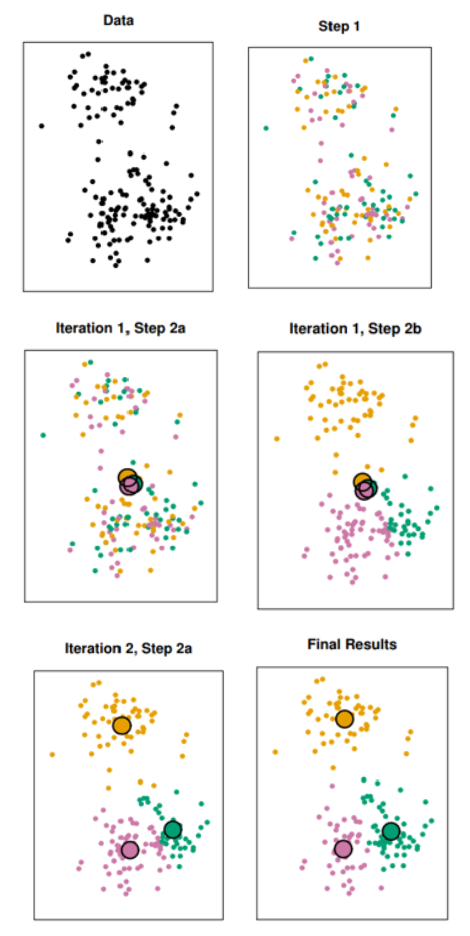
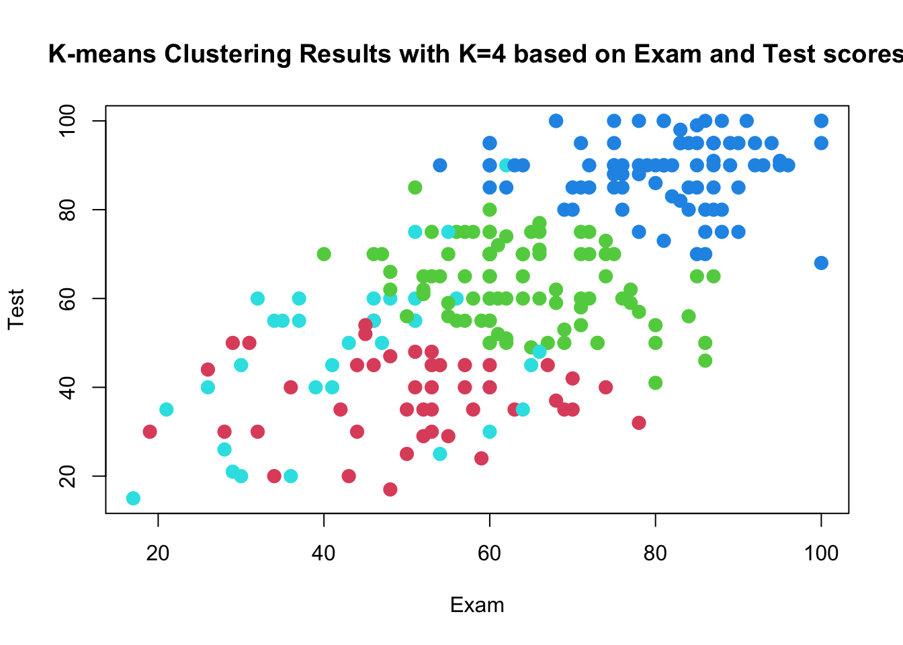
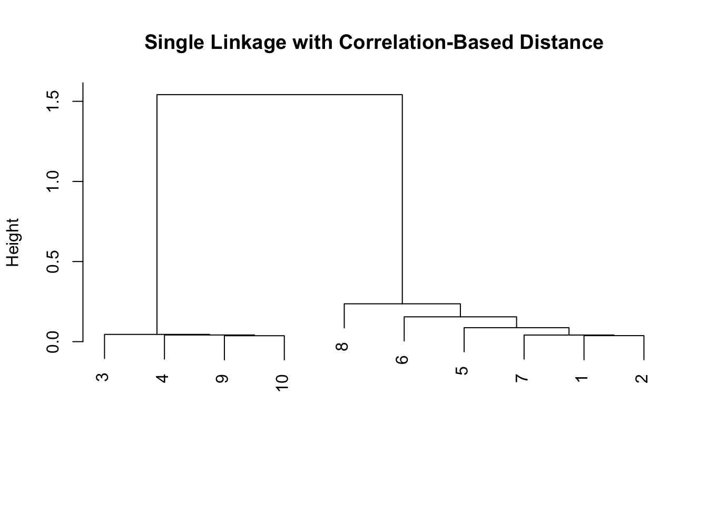
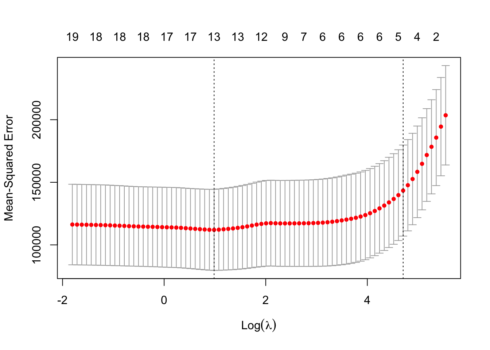
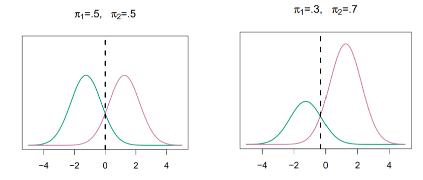

| Areas | Statistical_Learning | Machine_Learning |
|---|---|---|
| Scope | Subfield of Statistics | Subfield of AI |
| Focus | Models building and their interpretability | Prediction accuracy |
| Data | Use survey methods / experimental study to collect random data with a particular purpose or objective - understand ideas behind various techniques and accurately assess performance of each technique | Collect large or big data set in a routine way - Focuses on large scale applications |
| Approach | Models with predefined assumptions and all data. Interpretable but holds limitations in capturing complex patterns | Use training data to build the model with no assumptions and use a test set to evaluation model |
| Concern | Parameter estimation and hypothesis testing at a certain error rate | Bias-variance trade-off and prediction errors |
| Application | Econometrics, biostatistics, finance, etc | Natural language proccessing, face recognition, traffic prediction, where predictive accuracy and pattern recognition are paramount |
ML_Notes
1 Lesson 1: Overview of SL & ML üêà
| Areas | Supervised_Learning | Unsupervised_Learning |
|---|---|---|
| Focus | Focus on outcome measurement, Y (dependent variable) | No outcome measurement, Y, just a set of predictors |
| Variables | Use p predictor measurements (independent variables) | Find features of X that behave similarly or find linear combinations of X with the most variation |
| Purpose | For regression / classification problems | Use unsupervised learning as first step of supervised learning |
| Concern | - | Difficult to evaluate the performance of approaches because of no outcome measurement for comparisons |
1.1 Some Basic Terminologies
Reducible Error \[ f(X) - \hat{f}(X) \] where \(f(X)\) is the true value while \(\hat{f}(x)\) is the predicted value
- We seek to find the most appropriate statistical learning technique that minimises the reducible error
Irreducible Error \[ \epsilon = Y - f(X) \]
- \(\epsilon\) cannot be predicted using \(X\)
Total Errors The average of the squared difference between the predicted \(Y\) and actual value \(Y\) is \[ E(Y-\hat{Y})^2 = E[f(X) +\epsilon -\hat{f}(X)]^2 + Var(\epsilon) \]
\[ E(Y-\hat{Y})^2 = [f(X)-\hat{f}(X)]^2 + Var(\epsilon) \]
Estimation of \(f\)
- Parametric (Linear, logistic, regression tree, Lasso)
- Assumes a function form/shape of \(f\)
- Use the training data to fit
- Non-parametric (Random forest, bagging, bootstrap)
- Does not assume the shape of \(f\)
- Need a very large number of observations
- Parametric (Linear, logistic, regression tree, Lasso)
Training & Testing Data
Objectives:
- Accurately predict unseen test cases
- Understand which independent variables affect the dependent variable, and how
- Assess quality of predictions or/and inferences
Prediction Accuracy VS Interpretability
- More restrictive (less flexibility) means more interpretable in inference objective
- Less flexibility, it is likely bias is higher and variance is smaller. Vice Versa
- For prediction objective, less restrictive does not always yield the best model.
- More restrictive (less flexibility) means more interpretable in inference objective
Bias Variance Trade Off
\[ E(y_0-\hat{f}(x_0))^2 = Var(\hat{f}(x_0))+[Bias(\hat{f}(x_0))]^2+Var(\epsilon) \]
- Bias: Error that is introduced by approximating a real-life situation with a much simpler model \(\hat{f}\)
- Variance: Amount by which \(\hat{f}\) would change if we estimated it again using a different training data set
- Relationship with flexibility: As flexibility increases, its variance increases while its bias decreases.
Validation
- Model is fitted on a training data set and tested with a validation set.
- The validation test set provides a validation-set error which provides an estimate of the test error
K-Fold Cross Validation
- Widely used approach for estimating test error
- Randomly divide the data into \(K\) equal-sized parts
- Results from each K parts are combined at the end
Validation and Cross-Validation
- Use cross-validation to identify the parameter values for a given approach
- Use validation to choose best approach among all the considered approaches
As the foundation of this course is from Statistical learning with R, refer to Statistical Learning Notes where the various codes can be obtained.
1.2 Some basic codes:
- Multiple regression model + Quadratic variables
# Carseats example in textbook
library(ISLR)
attach(Carseats)
names(Carseats) [1] "Sales" "CompPrice" "Income" "Advertising" "Population"
[6] "Price" "ShelveLoc" "Age" "Education" "Urban"
[11] "US" summary(Carseats) Sales CompPrice Income Advertising
Min. : 0.000 Min. : 77 Min. : 21.00 Min. : 0.000
1st Qu.: 5.390 1st Qu.:115 1st Qu.: 42.75 1st Qu.: 0.000
Median : 7.490 Median :125 Median : 69.00 Median : 5.000
Mean : 7.496 Mean :125 Mean : 68.66 Mean : 6.635
3rd Qu.: 9.320 3rd Qu.:135 3rd Qu.: 91.00 3rd Qu.:12.000
Max. :16.270 Max. :175 Max. :120.00 Max. :29.000
Population Price ShelveLoc Age Education
Min. : 10.0 Min. : 24.0 Bad : 96 Min. :25.00 Min. :10.0
1st Qu.:139.0 1st Qu.:100.0 Good : 85 1st Qu.:39.75 1st Qu.:12.0
Median :272.0 Median :117.0 Medium:219 Median :54.50 Median :14.0
Mean :264.8 Mean :115.8 Mean :53.32 Mean :13.9
3rd Qu.:398.5 3rd Qu.:131.0 3rd Qu.:66.00 3rd Qu.:16.0
Max. :509.0 Max. :191.0 Max. :80.00 Max. :18.0
Urban US
No :118 No :142
Yes:282 Yes:258
#multiple regression model including all independent variables
lm.carseat1=lm(Sales~., data=Carseats)
summary(lm.carseat1)
Call:
lm(formula = Sales ~ ., data = Carseats)
Residuals:
Min 1Q Median 3Q Max
-2.8692 -0.6908 0.0211 0.6636 3.4115
Coefficients:
Estimate Std. Error t value Pr(>|t|)
(Intercept) 5.6606231 0.6034487 9.380 < 2e-16 ***
CompPrice 0.0928153 0.0041477 22.378 < 2e-16 ***
Income 0.0158028 0.0018451 8.565 2.58e-16 ***
Advertising 0.1230951 0.0111237 11.066 < 2e-16 ***
Population 0.0002079 0.0003705 0.561 0.575
Price -0.0953579 0.0026711 -35.700 < 2e-16 ***
ShelveLocGood 4.8501827 0.1531100 31.678 < 2e-16 ***
ShelveLocMedium 1.9567148 0.1261056 15.516 < 2e-16 ***
Age -0.0460452 0.0031817 -14.472 < 2e-16 ***
Education -0.0211018 0.0197205 -1.070 0.285
UrbanYes 0.1228864 0.1129761 1.088 0.277
USYes -0.1840928 0.1498423 -1.229 0.220
---
Signif. codes: 0 '***' 0.001 '**' 0.01 '*' 0.05 '.' 0.1 ' ' 1
Residual standard error: 1.019 on 388 degrees of freedom
Multiple R-squared: 0.8734, Adjusted R-squared: 0.8698
F-statistic: 243.4 on 11 and 388 DF, p-value: < 2.2e-16# multiple regression model with significant factors
lm.carseat2=lm(Sales~CompPrice+Income+Advertising+Price+ShelveLoc+Age,
data=Carseats)
summary(lm.carseat2)
Call:
lm(formula = Sales ~ CompPrice + Income + Advertising + Price +
ShelveLoc + Age, data = Carseats)
Residuals:
Min 1Q Median 3Q Max
-2.7728 -0.6954 0.0282 0.6732 3.3292
Coefficients:
Estimate Std. Error t value Pr(>|t|)
(Intercept) 5.475226 0.505005 10.84 <2e-16 ***
CompPrice 0.092571 0.004123 22.45 <2e-16 ***
Income 0.015785 0.001838 8.59 <2e-16 ***
Advertising 0.115903 0.007724 15.01 <2e-16 ***
Price -0.095319 0.002670 -35.70 <2e-16 ***
ShelveLocGood 4.835675 0.152499 31.71 <2e-16 ***
ShelveLocMedium 1.951993 0.125375 15.57 <2e-16 ***
Age -0.046128 0.003177 -14.52 <2e-16 ***
---
Signif. codes: 0 '***' 0.001 '**' 0.01 '*' 0.05 '.' 0.1 ' ' 1
Residual standard error: 1.019 on 392 degrees of freedom
Multiple R-squared: 0.872, Adjusted R-squared: 0.8697
F-statistic: 381.4 on 7 and 392 DF, p-value: < 2.2e-16confint(lm.carseat2, level=0.95) 2.5 % 97.5 %
(Intercept) 4.48236820 6.46808427
CompPrice 0.08446498 0.10067795
Income 0.01217210 0.01939784
Advertising 0.10071856 0.13108825
Price -0.10056844 -0.09006946
ShelveLocGood 4.53585700 5.13549250
ShelveLocMedium 1.70550103 2.19848429
Age -0.05237301 -0.03988204predict(lm.carseat2,
data.frame(CompPrice=116, Income=80, Advertising=7,
Price=100, ShelveLoc="Good", Age=56),
interval="confidence",
level=.95) fit lwr upr
1 11.00828 10.77329 11.24326predict(lm.carseat2,
data.frame(CompPrice=116, Income=80, Advertising=7,
Price=100, ShelveLoc="Good", Age=56),
interval="prediction",
level=.95) fit lwr upr
1 11.00828 8.9903 13.02625# quadratic relationship
lm.carseat3=lm(Sales~CompPrice+Income+Advertising+
Price+ShelveLoc+Age+I(Price^2), data=Carseats)
summary(lm.carseat3)
Call:
lm(formula = Sales ~ CompPrice + Income + Advertising + Price +
ShelveLoc + Age + I(Price^2), data = Carseats)
Residuals:
Min 1Q Median 3Q Max
-2.7580 -0.7084 0.0344 0.6883 3.2802
Coefficients:
Estimate Std. Error t value Pr(>|t|)
(Intercept) 5.988e+00 8.756e-01 6.839 3.09e-11 ***
CompPrice 9.268e-02 4.129e-03 22.448 < 2e-16 ***
Income 1.577e-02 1.839e-03 8.576 2.32e-16 ***
Advertising 1.163e-01 7.744e-03 15.012 < 2e-16 ***
Price -1.050e-01 1.380e-02 -7.613 2.03e-13 ***
ShelveLocGood 4.832e+00 1.527e-01 31.645 < 2e-16 ***
ShelveLocMedium 1.953e+00 1.255e-01 15.564 < 2e-16 ***
Age -4.603e-02 3.182e-03 -14.466 < 2e-16 ***
I(Price^2) 4.227e-05 5.896e-05 0.717 0.474
---
Signif. codes: 0 '***' 0.001 '**' 0.01 '*' 0.05 '.' 0.1 ' ' 1
Residual standard error: 1.02 on 391 degrees of freedom
Multiple R-squared: 0.8722, Adjusted R-squared: 0.8695
F-statistic: 333.4 on 8 and 391 DF, p-value: < 2.2e-16- Code for train-test split for multiple regression
library(ISLR)
attach(Auto)
set.seed(3344)
Auto1 <- Auto[,1:8]
train <- sample(1:nrow(Auto1), 200) #sample 200 out of the whole sample size
test <- -train
auto.train <- Auto1[train,]
auto.test <- Auto1[test,]
# multiple regression model
lm.fit <- lm(mpg~., data=auto.train)
lm.pred <- predict(lm.fit, auto.test)
mse.mrm <- mean((auto.test$mpg-lm.pred)^2)
mse.mrm[1] 12.55657- Lasso & Ridge Regularization
#Lasso
library(glmnet)
train.x <- model.matrix(mpg~., data=auto.train)[,-1] # Remove the intercept
train.y <-auto.train$mpg
test.x <- model.matrix(mpg~., data=auto.test)[,-1] # Remove the intercept
test.y <- auto.test$mpg
lasso.mod <- glmnet(train.x, train.y, alpha=1)
cv.out <- cv.glmnet(train.x, train.y, alpha=1,
nfolds = 10) # Default 10 Fold, change this for other fold value
lambda.lasso <- cv.out$lambda.min
lambda.lasso[1] 0.007414423lasso.pred <- predict(lasso.mod, newx=test.x, s=lambda.lasso)
mse.lasso <- mean((test.y-lasso.pred)^2)
mse.lasso[1] 12.52336#Ridge regression
ridge.mod <- glmnet(train.x, train.y, alpha=0)
cv.out <- cv.glmnet(train.x, train.y, alpha=0)
lambda.rr <- cv.out$lambda.min
lambda.rr[1] 0.6600431ridge.pred <- predict(ridge.mod, newx=test.x, s=lambda.rr)
mse.rr <- mean((test.y-ridge.pred)^2)
mse.rr[1] 13.00824After comparing all models above using the Auto Dataset, we have that Lasso is the best model.
Rebuild the model using all of the data:
x <- model.matrix(mpg~., data=Auto1)[,-1]
y <- Auto1$mpg
out.lasso <- glmnet(x,y, alpha=1)
lasso.m2 <- predict(out.lasso, type="coefficients", s=lambda.lasso)[1:8,]
lasso.m2[lasso.m2!=0] (Intercept) cylinders displacement horsepower weight
-17.226062638 -0.388797977 0.016409017 -0.015275841 -0.006357916
acceleration year origin
0.073666083 0.747775775 1.380164964 1.3 Classification Setting
Testing Error for Classification
- False negative rate (FNR): Incorrectly assign a default individual to the no default category
- False positive rate (FPR): Incorrectly assign a no default individual to the default category
Confusion Matrix
- Sensitivity: % of true defaulters that are identified as defaulters
- Specificity: % of true non-defaulters that are correctly identified as non-defaulters
Formula:
\[
Sensitivity = \frac{Predicted \space Default}{Total \space no.\space of\space True \space Default}
\] \[
Specificity = \frac{Predicted \space No \space Default}{Total \space no.\space of\space True \space No \space Default}
\] 
2 Lesson 2: Unsupervised Learning I üêï
Goals of Unsupervised learning
- Observe only the features, \(X_1, X_2,..., X_p\)
- Gather insights from the data and is not interested in prediction
2.1 Principal Components Analysis (PCA)
What is it?
- A dimensionality reduction method by reducing the dimensionality of large data sets
- Finds a sequence of linear combinations of the variables that have maximal variance, and mutually uncorrelated
- Reducing dimension comes at the expense of accuracy, but essentially to trade little accuracy for simplicity
- Low dimension data sets are easier to explore and visualize and makes analysing data points easier and faster for machine learning
Below refers to the above point 2: \[ X_1, X_2, …, X_{1000} \]
\[ \text{The above is converted through PCA to output: } \]
\[ Var(Y_1+Y_2) = Var(Y_1)+Var(Y_2)+2Cov(Y_1, Y_2) \]
Applications of PCA
Use the principal components:
In understanding and visualising the data
As a tool for data imputation, for filling in missing values (No time to cover)
As predictors in a regression model, instead of original larger set of independent variables
Mathematical Representation of PCA
Each observation (X_1,X_2,…,X_p) is multiplied to the loading vector to obtain the scores, \(Z\).
Observations vector: \[ X = \begin{bmatrix} X_1 & X_2 & ... & X_p \end{bmatrix} \]
Loading vector: $$ _i =
\[\begin{bmatrix} \phi_{11} \\ \phi_{21} \\... \\ \phi_{p1} \end{bmatrix}\]$$ The above creates a normalized linear combination of features:
$$ Z=X_i= \[\begin{bmatrix} X_1 & X_2 & ... & X_p \end{bmatrix} \begin{bmatrix} \phi_{11} \\ \phi_{21} \\... \\ \phi_{p1} \end{bmatrix}\]\
Z= {11}X_1+{21}X_2+…+_{p1}X_p
$$
Under PCA, the objective is to minimise the perpendicular distance from the observation to the line. As such the distance of the line is maximised.
Goal:
\[ \max{\frac{\sum^{n}_{i=1} Z_i^2} {n}} \]
2.1.1 Second Prinipal Component
Steps are similar to the First Principal Component, however, it has to be uncorrelated with \(Z_1\).
2.1.2 Singular Value Decomposition
(TO ADD IN THEORY)
2.1.2.1 Simple Numerical Example of Singular Value Decomposition - Manual calculation
data <- c(3, 5, 5, 9, 1, 9, 3, 7, 4, 2, 5, 9, 1, 6, 8, 3)
A <- matrix(data, nrow = 4)
A [,1] [,2] [,3] [,4]
[1,] 3 1 4 1
[2,] 5 9 2 6
[3,] 5 3 5 8
[4,] 9 7 9 3sA <- svd(A) # Do SVD
names(sA)[1] "d" "u" "v"d <- sA$d
U <- sA$u
V <- sA$v
D <- diag(d)round(U, 2) [,1] [,2] [,3] [,4]
[1,] -0.21 0.37 -0.13 -0.89
[2,] -0.52 -0.70 0.43 -0.23
[3,] -0.48 -0.21 -0.84 0.15
[4,] -0.67 0.57 0.31 0.36round(t(V), 2) [,1] [,2] [,3] [,4]
[1,] -0.55 -0.52 -0.49 -0.43
[2,] 0.26 -0.40 0.65 -0.59
[3,] 0.07 0.70 -0.22 -0.68
[4,] 0.79 -0.29 -0.54 -0.04round(D, 2) [,1] [,2] [,3] [,4]
[1,] 21.23 0.00 0.00 0.00
[2,] 0.00 6.43 0.00 0.00
[3,] 0.00 0.00 4.88 0.00
[4,] 0.00 0.00 0.00 0.15round(t(V) %*% V, 2) # Matrix multiplication - Becomes identity matrix [,1] [,2] [,3] [,4]
[1,] 1 0 0 0
[2,] 0 1 0 0
[3,] 0 0 1 0
[4,] 0 0 0 1round(t(U) %*% U, 2) # Matrix multiplication - Becomes identity matrix [,1] [,2] [,3] [,4]
[1,] 1 0 0 0
[2,] 0 1 0 0
[3,] 0 0 1 0
[4,] 0 0 0 1round(U %*% D %*% t(V), 2) [,1] [,2] [,3] [,4]
[1,] 3 1 4 1
[2,] 5 9 2 6
[3,] 5 3 5 8
[4,] 9 7 9 3Using the example above, we have that:

# Third principal component set of values
u1 <- U[,1]
v1 <- V[,1]
d1 <- d[1]
A1 <- u1 %*% t(v1)*d1u1[1] -0.2147262 -0.5186023 -0.4814399 -0.6731715v1[1] -0.5512099 -0.5199228 -0.4880448 -0.4331977d1[1] 21.23136A1 [,1] [,2] [,3] [,4]
[1,] 2.512927 2.370291 2.224962 1.974917
[2,] 6.069168 5.724678 5.373681 4.769779
[3,] 5.634260 5.314455 4.988610 4.427983
[4,] 7.878082 7.430916 6.975304 6.191410round(A1,2) [,1] [,2] [,3] [,4]
[1,] 2.51 2.37 2.22 1.97
[2,] 6.07 5.72 5.37 4.77
[3,] 5.63 5.31 4.99 4.43
[4,] 7.88 7.43 6.98 6.19We see that A1 is still quite far from the original A matrix. By adding another principal component we have:

# Second principal component set of values
u2 <- U[,2]
v2 <- V[,2]
d2 <- d[2]
A2 <- u2 %*% t(v2)*d2
A1A2 <- A1+A2u2[1] 0.3739765 -0.7013767 -0.2082253 0.5699602v2[1] 0.2648388 -0.4000607 0.6500900 -0.5892325d2[1] 6.432445A2 [,1] [,2] [,3] [,4]
[1,] 0.6370919 -0.9623793 1.5638455 -1.4174477
[2,] -1.1948381 1.8049004 -2.9329242 2.6583615
[3,] -0.3547245 0.5358403 -0.8707289 0.7892165
[4,] 0.9709620 -1.4667173 2.3833840 -2.1602660round(A2,2) [,1] [,2] [,3] [,4]
[1,] 0.64 -0.96 1.56 -1.42
[2,] -1.19 1.80 -2.93 2.66
[3,] -0.35 0.54 -0.87 0.79
[4,] 0.97 -1.47 2.38 -2.16round(A1A2, 2) [,1] [,2] [,3] [,4]
[1,] 3.15 1.41 3.79 0.56
[2,] 4.87 7.53 2.44 7.43
[3,] 5.28 5.85 4.12 5.22
[4,] 8.85 5.96 9.36 4.03From the above, we see that with PC1 and PC2, it gets closer to the original A matrix.
Repeating the steps one more time.
# Third principal component set of values
u3 <- U[,3]
v3 <- V[,3]
d3 <- d[3]
A3 <- u3 %*% t(v3)*d3
A1A2A3 <- A1+A2+A3u3[1] -0.1315028 0.4302032 -0.8377092 0.3096378v3[1] 0.07265877 0.69537763 -0.21865293 -0.68070665d3[1] 4.881755A3 [,1] [,2] [,3] [,4]
[1,] -0.04664435 -0.4464077 0.1403674 0.4369894
[2,] 0.15259409 1.4603951 -0.4592033 -1.4295839
[3,] -0.29713740 -2.8437406 0.8941792 2.7837438
[4,] 0.10982926 1.0511162 -0.3305105 -1.0289399round(A3,2) [,1] [,2] [,3] [,4]
[1,] -0.05 -0.45 0.14 0.44
[2,] 0.15 1.46 -0.46 -1.43
[3,] -0.30 -2.84 0.89 2.78
[4,] 0.11 1.05 -0.33 -1.03round(A1A2A3, 2) [,1] [,2] [,3] [,4]
[1,] 3.10 0.96 3.93 0.99
[2,] 5.03 8.99 1.98 6.00
[3,] 4.98 3.01 5.01 8.00
[4,] 8.96 7.02 9.03 3.002.2 Proportion of Variance Explained (PVE)
Determines the number of principal components
- PVEs should sum to one when maximum number of principal component is used
2.2.1 Coding
Using another numerical example:
data <- c(12,13,15, 17, 21, 24, 26, 34, 28, 29, 43, 59, 20, 35, 30, 48, 32, 56)
M <- matrix(data, nrow=6) # data matrix with dimension 6x3
M [,1] [,2] [,3]
[1,] 12 26 20
[2,] 13 34 35
[3,] 15 28 30
[4,] 17 29 48
[5,] 21 43 32
[6,] 24 59 56# Manual calculation
X <- scale(M) # scale the matrix M, to ensure data has a mean of 0
# The standard deviation is also adjusted to 1
round(X, 4) [,1] [,2] [,3]
[1,] -1.0660 -0.8335 -1.2919
[2,] -0.8528 -0.1985 -0.1407
[3,] -0.4264 -0.6747 -0.5245
[4,] 0.0000 -0.5954 0.8570
[5,] 0.8528 0.5160 -0.3710
[6,] 1.4924 1.7861 1.4710
attr(,"scaled:center")
[1] 17.00000 36.50000 36.83333
attr(,"scaled:scale")
[1] 4.690416 12.597619 13.029454sX <- svd(X) # do SVD
names(sX)[1] "d" "u" "v"d <- sX$d
U <- sX$u
V <- sX$v
D <- diag(d)
round(U, 4) [,1] [,2] [,3]
[1,] -0.5148 -0.2737 0.1578
[2,] -0.1979 0.1764 0.6615
[3,] -0.2636 0.0004 -0.2499
[4,] 0.0322 0.7302 -0.4417
[5,] 0.1724 -0.5997 -0.4325
[6,] 0.7717 -0.0337 0.3047round(V, 4) [,1] [,2] [,3]
[1,] 0.5987 -0.3116 -0.7379
[2,] 0.5890 -0.4531 0.6692
[3,] 0.5428 0.8353 0.0877round(D, 4) [,1] [,2] [,3]
[1,] 3.5557 0.0000 0.0000
[2,] 0.0000 1.3496 0.0000
[3,] 0.0000 0.0000 0.7318round(t(V) %*% V, 4) [,1] [,2] [,3]
[1,] 1 0 0
[2,] 0 1 0
[3,] 0 0 1round(t(U) %*% U, 4) [,1] [,2] [,3]
[1,] 1 0 0
[2,] 0 1 0
[3,] 0 0 1round(U %*% D %*% t(V), 4) [,1] [,2] [,3]
[1,] -1.0660 -0.8335 -1.2919
[2,] -0.8528 -0.1985 -0.1407
[3,] -0.4264 -0.6747 -0.5245
[4,] 0.0000 -0.5954 0.8570
[5,] 0.8528 0.5160 -0.3710
[6,] 1.4924 1.7861 1.4710pcs <- U %*% D
pcs [,1] [,2] [,3]
[1,] -1.8304133 -0.3693701932 0.1155180
[2,] -0.7038288 0.2380860647 0.4841423
[3,] -0.9373818 0.0004838648 -0.1828813
[4,] 0.1145313 0.9855754071 -0.3232196
[5,] 0.6131207 -0.8093127525 -0.3165460
[6,] 2.7439719 -0.0454623909 0.2229866pcss <- X %*% V
pcss [,1] [,2] [,3]
[1,] -1.8304133 -0.3693701932 0.1155180
[2,] -0.7038288 0.2380860647 0.4841423
[3,] -0.9373818 0.0004838648 -0.1828813
[4,] 0.1145313 0.9855754071 -0.3232196
[5,] 0.6131207 -0.8093127525 -0.3165460
[6,] 2.7439719 -0.0454623909 0.2229866# Using pcob
pcob <- prcomp(M, scale=TRUE) # use R function prcomp, with scaling
# Use scaling when the features are very different.
names(pcob)[1] "sdev" "rotation" "center" "scale" "x" summary(pcob)Importance of components:
PC1 PC2 PC3
Standard deviation 1.5902 0.6036 0.32729
Proportion of Variance 0.8429 0.1214 0.03571
Cumulative Proportion 0.8429 0.9643 1.00000pcob$sdev # standard deviation from PCs[1] 1.5901502 0.6035781 0.3272855pcob$rotation # same as matrix V PC1 PC2 PC3
[1,] 0.5986878 -0.3115670 -0.73790166
[2,] 0.5890133 -0.4530530 0.66918331
[3,] 0.5428040 0.8352658 0.08772019pcob$center # means for scaling[1] 17.00000 36.50000 36.83333pcob$scale # sd for scaling[1] 4.690416 12.597619 13.029454pcob$x # XV or UD PC1 PC2 PC3
[1,] -1.8304133 -0.3693701932 0.1155180
[2,] -0.7038288 0.2380860647 0.4841423
[3,] -0.9373818 0.0004838648 -0.1828813
[4,] 0.1145313 0.9855754071 -0.3232196
[5,] 0.6131207 -0.8093127525 -0.3165460
[6,] 2.7439719 -0.0454623909 0.2229866totalsum <- sum(pcss^2) # total sum
pc1sum <- sum(pcss[,1]^2) # sum from PC1
pc2sum <- sum(pcss[,2]^2) # sum from PC2
pc3sum <- sum(pcss[,3]^2) # sum from PC3
sd <- sqrt(c(pc1sum, pc2sum, pc3sum)/(6-1)) # n-1=6-1=5
sd[1] 1.5901502 0.6035781 0.3272855totalsum[1] 15pc1sum[1] 12.64289pc2sum[1] 1.821532pc3sum[1] 0.535579propvar <- c(pc1sum, pc2sum, pc3sum)/totalsum
round(propvar, 4)[1] 0.8429 0.1214 0.0357par(mfrow=c(1,2))
biplot(pcob, scale=0)
plot(pcob$x[,1], pcob$x[,2], xlab="PC1", ylab="PC2", ylim=c(-2, 2),
main="Plot PC1 vs. PC2")Using the US Arrest Dataset
# Load the USArrests data and set row names as state names
data("USArrests")
states <- row.names(USArrests)
row.names(USArrests) <- states
# Display dimensions and variable names of the dataset
# dim(USArrests)
# names(USArrests)
# Optionally, calculate means and standard deviations for each variable
# apply(USArrests, 2, mean)
# apply(USArrests, 2, sd)
# Perform PCA on the scaled data
pr.out <- prcomp(USArrests, scale = TRUE)
summary(pr.out) # 2 principal components are sufficientImportance of components:
PC1 PC2 PC3 PC4
Standard deviation 1.5749 0.9949 0.59713 0.41645
Proportion of Variance 0.6201 0.2474 0.08914 0.04336
Cumulative Proportion 0.6201 0.8675 0.95664 1.00000# Examine the components of the PCA output
pr.out$center # Mean of each variable Murder Assault UrbanPop Rape
7.788 170.760 65.540 21.232 pr.out$scale # Scaling applied to each variable Murder Assault UrbanPop Rape
4.355510 83.337661 14.474763 9.366385 pr.out$rotation # The rotation (loading of each variable on the principal components) PC1 PC2 PC3 PC4
Murder -0.5358995 0.4181809 -0.3412327 0.64922780
Assault -0.5831836 0.1879856 -0.2681484 -0.74340748
UrbanPop -0.2781909 -0.8728062 -0.3780158 0.13387773
Rape -0.5434321 -0.1673186 0.8177779 0.08902432# Dimensions and plot of the first two principal components
dim(pr.out$x)[1] 50 4biplot(pr.out, scale = 0, main = "The first two Principal Components")
For the above graph, the top represents PC1 score while the right scale represents PC2 score.
# To create a mirrored version of the biplot
## The software may result in different sign for its loading vectors, the rotation converts the sign.
pr.out$rotation <- -pr.out$rotation
pr.out$x <- -pr.out$x
biplot(pr.out, scale = 0, main = "The first two Principal Components mirror image")
Explanation of the graph above:
Red Arrows:
- The direction of an arrow shows how that variable influences the principal components.
- The length of an arrow indicates how strongly that variable contributes to the principal components.
Interpretation of Loading:
- Murder, Assault, and Rape are pointing in the same general direction, meaning they are correlated.
- It suggest that Florida seems to have relately high values for Murder, Assault and Rape.
- The states on the left side have lower values for murder, assault and rape
- UrbanPop is pointing in a different direction, suggesting it has a different relationship with crime rates.
- Murder, Assault, and Rape are pointing in the same general direction, meaning they are correlated.
# Calculate and print the proportion of variance explained by each principal component
pr.var <- pr.out$sdev^2
pve <- pr.var/sum(pr.var)
round(pve, 4)[1] 0.6201 0.2474 0.0891 0.0434# Plotting the variance explained
par(mfrow = c(1, 2))
plot(pve, xlab = "Principal Component", ylab = "Proportion of Variance Explained", ylim = c(0, 1), type = "b")
plot(cumsum(pve), xlab = "Cumulative Principal Component", ylab = "Proportion of Variance Explained", ylim = c(0, 1), type = "b")
3 Lesson 3: Unsupervised Learning II üêü
3.1 Kmeans-clustering
An approach for partitioning a dataset into \(K\) distinct, non-overlapping clusters
Properties
Each observation belongs to at least one of the K clusters
Clusters are non-overlapping: No observation belongs to more than one cluster
Within Cluster Variation
\[ \min_{C_1,...,C_K} \{\sum^K_{k=1} WCV(C_k) \} \]
The formula above is to be solved such that the total within-cluster variation, summed over all \(K\) clusters, is minimised.
- Euclidean distance calculation:
\[ WCV(C_k)= \frac{1}{|C_k|} \sum_{i,i'\epsilon C_k} \sum^p_{j=1} (x_{ij}-x_{i'j})^2 \] where \(|C_k|\) denotes the no. of obs in the \(k\)th cluster.
\((x_{ij}-x_{i'j})^2\) : Represents the distance between two observation
Combining the two formulas above gives us:
\[ \min_{C_1,...,C_K} \{\sum^K_{k=1} \frac{1}{|C_k|} \sum_{i,i'\epsilon C_k} \sum^p_{j=1} (x_{ij}-x_{i'j})^2 \} \] Can be simplied to: \[ 2\sum_{i\subset C_k}\sum^{p}_{j=1} (x_{ij}-\bar{x}_{kj})^2 \]
\(\bar{x}\_{kj}\) : Represents the mean of the cluster The code chunk below uses the formulas above to deduce the total sum.
The code chunk below manually calculates the formula seen above
d1 <- c(12, 13, 14, 17, 20)
d2 <- c(4, 7, 10)
d3 <- c(18, 19, 22, 25, 27)
su1=0
for (i in 1: length(d1)) {
su1 <- su1 + sum((d1[i]-d1)^2)
}
s1 <- su1/length(d1)
su2=0
for (i in 1: length(d2)) {
su2 <- su2 + sum((d2[i]-d2)^2)
}
s2 <- su2/length(d2)
su3=0
for (i in 1: length(d3)) {
su3 <- su3 + sum((d3[i]-d3)^2)
}
s3 <- su3/length(d3)s1 ; s2 ; s3[1] 85.6[1] 36[1] 117.6tots <- s1+s2+s3
tots[1] 239.2sum1 <- sum((d1-mean(d1))^2)
sum2 <- sum((d2-mean(d2))^2)
sum3 <- sum((d3-mean(d3))^2)
totsum <- 2*(sum1+sum2+sum3)
c(sum1, sum2, sum3, totsum)[1] 42.8 18.0 58.8 239.2We see that both formula yield the same total value.
3.1.1 General steps in K-clustering
Randomly assign a number, from 1 to \(K\), to each observation. These serve as initial cluster assignments.
Iterate until cluster assignments stop changing:
2.1: For each of the \(K\) clusters, compute the cluster centroid. The \(k\)th cluster centroid is the vector of the \(p\) feature means for the observations in the \(k\)th cluster.
2.2: Assign each observation to the cluster whose centroid is closest, defined by the Euclidean distance.
Visual Representation of the steps:

3.1.2 Example Code of the steps shown above
set.seed(2)
x <- matrix(c(12, 13, 11, 18, 16, 17, 19, 20, 21, 22), ncol=2)
x # To view the matrix [,1] [,2]
[1,] 12 17
[2,] 13 19
[3,] 11 20
[4,] 18 21
[5,] 16 22plot(x, main="plot of X1 and X2", xlab="X1", ylab="X2", pch=20, cex=2)k.out <- kmeans(x, centers = 2, nstart=20) # centers : No. of clusters, nstart: No. of random sets
k.out$cluster[1] 2 2 2 1 1# Plot the Clusters
plot(x, col=(k.out$cluster+1), main="K-means Clustering Results with K=2",
xlab="X1", ylab="X2", pch=20, cex=2)# Get the summary of the cluster
k.outK-means clustering with 2 clusters of sizes 2, 3
Cluster means:
[,1] [,2]
1 17 21.50000
2 12 18.66667
Clustering vector:
[1] 2 2 2 1 1
Within cluster sum of squares by cluster:
[1] 2.500000 6.666667
(between_SS / total_SS = 81.2 %)
Available components:
[1] "cluster" "centers" "totss" "withinss" "tot.withinss"
[6] "betweenss" "size" "iter" "ifault" Total variation is reduced by 81.2% by clustering them.
Steps taken from the above example:
- Randomly placed with 2 clusters
- Cluster 1: \[ (12,17),\space (16,22) \]
- Cluster 2: \[ (13,19),\space (11,20), \space (18,21) \]
- Calculate the centroid of each cluster
- Cluster 1: \[ [\frac{12+16}{2},\space \frac{17+22}{2}] = [14, 19.5] \]
- Cluster 2:\[ [\frac{13+11+18}{3},\space \frac{19+20+21}{3}] = [14, 20] \]
- Form the new cluster by comparing the distance from the centroid of each cluster
- New cluster 1: \[ (12,17), (13,19) \]
- New cluster 2:\[ (16, 22), (11,20), (18,21) \]
From the above, we see that observation \((13,19)\) is closer to the centroid of cluster 1. Hence we bring that observation over. Similarly for observation \((16,22)\) where it is closer to the centroid of cluster 2. Hence we will bring that observation over.
The steps above will be repeated until no more changes can be made.
Below is how the variation is manually calculated. We can see that the end result is the same as the above
# Manual calculation of the variation:
g1 <- k.out$centers[1,]
g2 <- k.out$centers[2,]
# calculate total sum of squares
tot <- rep(NA,5)
for (i in 1:5)
tot[i] <- (x[i,1]-mean(x[,1]))^2+(x[i,2]-mean(x[,2]))^2
sstot <- sum(tot)
sstot[1] 48.8# calculate the sum of squares due to group 1
totg1 <- rep(NA,2)
for (i in 4:5)
totg1[i-3] <- (x[i,1]-g1[1])^2+(x[i,2]-g1[2])^2
ssg1 <- sum(totg1)
ssg1[1] 2.5# calculate the sum of squares due to group 2
totg2 <- rep(NA,3)
for (i in 1:3)
totg2[i] <- (x[i,1]-g2[1])^2+(x[i,2]-g2[2])^2
ssg2 <- sum(totg2)
ssg2[1] 6.666667# calculate the proportion of sum of squares explained by clusters
1-(ssg1+ssg2)/sstot[1] 0.81215853.1.3 Practical Application
3.1.3.1 Initial Visualisation of PCA
score <- read.csv("Datasets/Score.csv", stringsAsFactors = TRUE)
summary(score) Participation Assignment Test Exam
Min. :70.00 Min. : 27.0 Min. : 15.00 Min. : 17.00
1st Qu.:76.00 1st Qu.: 81.0 1st Qu.: 50.00 1st Qu.: 53.00
Median :78.00 Median : 88.0 Median : 65.00 Median : 64.00
Mean :78.17 Mean : 83.5 Mean : 65.38 Mean : 64.66
3rd Qu.:80.00 3rd Qu.: 93.0 3rd Qu.: 85.00 3rd Qu.: 78.00
Max. :86.00 Max. :100.0 Max. :100.00 Max. :100.00 dim(score)[1] 257 4attach(score)
# perform PCA
pr.out <- prcomp(score) # we do not scale the data
summary(pr.out)Importance of components:
PC1 PC2 PC3 PC4
Standard deviation 26.6739 12.6139 10.4077 4.20077
Proportion of Variance 0.7139 0.1597 0.1087 0.01771
Cumulative Proportion 0.7139 0.8736 0.9823 1.00000biplot(pr.out, scale=0)
pr.out$rotation PC1 PC2 PC3 PC4
Participation -0.02389266 -0.02455078 0.02916386 0.998987422
Assignment -0.32485603 -0.80661523 0.49201636 -0.041956287
Test -0.75938555 0.53357169 0.37199696 -0.015909112
Exam -0.56323288 -0.25312127 -0.78656700 0.003271184pc1 <- pr.out$x[,1]
plot(pc1, score$Participation)
plot(pc1, score$Assignment)
plot(pc1, score$Test)plot(pc1, score$Exam)3.1.3.2 K-means clustering
set.seed(123)
k.out <- kmeans(score, 4, nstart=20) # we set 4 clusters
k.outK-means clustering with 4 clusters of sizes 45, 91, 87, 34
Cluster means:
Participation Assignment Test Exam
1 77.80000 87.15556 37.95556 50.57778
2 78.26374 86.12088 63.09890 63.93407
3 78.89655 90.89655 89.05747 80.75862
4 76.55882 52.73529 47.20588 44.05882
Clustering vector:
[1] 2 3 3 3 3 1 3 2 1 4 3 2 3 3 1 2 3 3 3 2 3 2 3 1 4 2 2 3 4 2 3 2 1 3 2 3 1
[38] 2 2 2 4 2 1 2 1 3 3 3 4 3 2 2 3 1 4 1 1 2 1 4 1 1 3 3 3 2 2 4 2 4 2 3 4 3
[75] 2 2 4 2 3 1 4 1 3 2 1 2 2 2 3 2 2 4 3 2 4 2 4 2 3 3 3 1 3 3 1 3 3 4 2 3 2
[112] 3 3 4 3 4 2 4 4 4 2 2 4 3 3 3 2 1 3 2 1 3 3 3 3 3 3 4 3 3 3 2 3 1 2 2 4 2
[149] 1 4 2 2 4 2 3 3 2 3 3 3 3 2 2 4 3 3 4 4 2 2 2 3 3 4 2 2 4 1 1 4 2 1 2 2 1
[186] 2 3 2 2 3 3 3 2 3 2 3 1 1 2 3 2 1 2 1 3 3 1 3 3 3 1 2 3 3 2 2 2 2 2 1 2 2
[223] 1 1 1 1 1 3 2 1 1 3 2 2 2 2 3 1 1 2 2 2 4 2 2 2 1 2 2 2 1 3 3 3 2 4 3
Within cluster sum of squares by cluster:
[1] 13106.00 24081.05 18410.78 20946.44
(between_SS / total_SS = 70.0 %)
Available components:
[1] "cluster" "centers" "totss" "withinss" "tot.withinss"
[6] "betweenss" "size" "iter" "ifault" # Only K-means
plot(score$Exam, score$Test, col=(k.out$cluster+1),
main="K-means Clustering Results with K=4 based on Exam and Test scores",
xlab="Exam", ylab="Test", pch=20, cex=2)
# With PCA
plot(pr.out$x[,1], pr.out$x[,2], col=(k.out$cluster+1),
main="K-means Clustering Results with K=4 based on PCA",
xlab="PC1", ylab="PC2", pch=20, cex=2)3.2 Hierarchical clustering
3.2.1 Theory
Difference to K-Means
- Does not require pre-determination of clusters
- Results in an attractive tree-based representation
- Dendrogram is built starting from the leaves and combining clusters up to the trunk (bottom-up clusters)
Methodology (As illustrated below):
- Start with each point in its own cluster
- Identify the closest two clusters and merge them
- Repeat Step 1 and 2
- Ends when all points are in a single cluster
For the example above,
- We start by identifying A and C to be the closest, forming the first part of the Dendrogram
- Afterwards, we find the next closest, which is D and E, which forms the second part of the Dendrogram.
- Next, cluster AC is closest to B and therefore we merge them together to form one cluster. This is represented in the Dendrogram as well.
- Lastly, cluster ACB and cluster DE are merged together, forming the entire Dendrogram
3.2.2 Types of linkages and its numerical example
| Linkage | Description |
|---|---|
| Complete | Maximal inter-cluster dissimilarity. Compute all pairwise dissimilarities between the observations in cluster A and the observations in cluster B, and record the largest of these dissimilarities. |
| Single | Minimal inter-cluster dissimilarity. Compute all pairwise dissimilarities between the observations. Compute all pairwise dissimilarities between the observations in cluster A and the observations in cluster B, and record the smallest of these dissimilarities. |
| Average | Mean inter-cluster dissimilarity. Compute all pairwise dissimilarities between the observations in cluster A and the observations in cluster B, and record the average of these dissimilarities. |
Formal formulas: Complete: \[ d_{CL}(G,H) =\max_{i\space \epsilon \space G,i' \space \epsilon \space H} {d_{ii'}} \] Let’s say:
Cluster 1 has 2 observations: \[ (2, 4), (3, 5) \]
Cluster 2 has 2 observations: \[ (4, 6), (7,6) \]
Cluster 3 has 1 observation: \[ (5, 9) \]
The inter-cluster dissimilarity between Clusters 1 and 2:
(2, 4) and (4, 6) dissimilarity measure =\(\sqrt{(2-4)^2+(4-6)^2} = \sqrt{8}\)
(2, 4) and (7, 6) dissimilarity measure =\(\sqrt{(2-7)^2+(4-6)^2 }= \sqrt{29}\)
(3, 5) and (4, 6) dissimilarity measure =\(\sqrt{(3-4)^2+(5-6)^2}=\sqrt{2}\)
(3, 5) and (7, 6) dissimilarity measure =\(\sqrt{(3-7)^2+(5-6)^2}=\sqrt{17}\)
The inter-cluster dissimilarity between Clusters 2 and 3:
(4, 6) and (5, 9) dissimilarity measure =\(\sqrt{(4-5)^2+(6-9)^2} = \sqrt{10}\)
(7, 6) and (5, 9) dissimilarity measure =\(\sqrt{(7-5)^2+(6-9)^2 }= \sqrt{13}\)
The inter-cluster dissimilarity between Clusters 1 and 3:
(2, 4) and (5, 9) dissimilarity measure =\(\sqrt{(2-5)^2+(4-9)^2} = \sqrt{34}\)
(3, 5) and (5, 9) dissimilarity measure =\(\sqrt{(3-5)^2+(5-9)^2 }= \sqrt{20}\)
Complete linkage: Focus on farthest pair of points, producing tight, compact clusters
Therefore, inter-cluster dissimilarity between Clusters 1 and 2 = \(\max(\sqrt{8},\sqrt{29},\sqrt{2},\sqrt{17})=\sqrt{29}\)
Single linkage: Focuses on closest pair of points, resulting in elongated clusters
Therefore, inter-cluster dissimilarity between Clusters 1 and 2 = \(\min(\sqrt{8},\sqrt{29},\sqrt{2},\sqrt{17})=\sqrt{2}\)
Average linkage: Leads to balanced clustering
Therefore, inter-cluster dissimilarity between Clusters 1 and 2 = \(\frac{(\sqrt{8}+\sqrt{29}+\sqrt{2}+\sqrt{17})}{4}=3.4377\)
3.2.3 Additional information:
Correlation-based distance- If two observations are highly correlated but they have high Euclidean distance, correlation-based distance may be prefered
- This measure focuses on the shapes of observation profiles rather than their magnitudes
- If two observations are highly correlated but they have high Euclidean distance, correlation-based distance may be prefered
3.2.4 Example Code
super <- read.csv("Datasets/Supermarket.csv", stringsAsFactors = TRUE)
summary(super) Customers Milk Bread Beer Shampoo
A :1 Min. :0.0 Min. :0.0 Min. :0.0 Min. :0.00
B :1 1st Qu.:0.0 1st Qu.:0.0 1st Qu.:0.0 1st Qu.:0.25
C :1 Median :1.0 Median :1.0 Median :0.0 Median :1.00
D :1 Mean :1.1 Mean :0.6 Mean :1.4 Mean :0.90
E :1 3rd Qu.:2.0 3rd Qu.:1.0 3rd Qu.:2.5 3rd Qu.:1.00
F :1 Max. :3.0 Max. :1.0 Max. :6.0 Max. :2.00
(Other):4
Chips
Min. :0.0
1st Qu.:0.0
Median :0.5
Mean :1.2
3rd Qu.:2.5
Max. :4.0
# View(super)
set.seed(9876)
k.out <- kmeans(super[,-1], 3, nstart=20) # Remove the customer column
k.outK-means clustering with 3 clusters of sizes 3, 4, 3
Cluster means:
Milk Bread Beer Shampoo Chips
1 0.6666667 0.3333333 0.3333333 0.3333333 0.3333333
2 2.2500000 1.0000000 0.0000000 1.5000000 0.2500000
3 0.0000000 0.3333333 4.3333333 0.6666667 3.3333333
Clustering vector:
[1] 2 2 3 3 1 2 2 1 1 3
Within cluster sum of squares by cluster:
[1] 3.333333 2.500000 6.666667
(between_SS / total_SS = 84.8 %)
Available components:
[1] "cluster" "centers" "totss" "withinss" "tot.withinss"
[6] "betweenss" "size" "iter" "ifault" km.cluster <- k.out$clusterNote that under Dendrogram, the function cutree(tree, cluster) helps us cut the tree such that we achieve the desired number of cluster.
Correlation Distance Graph
dd <- as.dist(1-cor(t(super[,-1]))) # find the correlation-based distance
kkc <- hclust(dd, method="complete")
plot(kkc, main="Complete Linkage with Correlation-Based Distance",
xlab="", sub="") 
hc.cluster <- cutree(kkc, 3)
hc.cluster [1] 1 1 2 2 1 1 1 3 2 2table(km.cluster, hc.cluster) hc.cluster
km.cluster 1 2 3
1 1 1 1
2 4 0 0
3 0 3 0kks <- hclust(dd, method="single")
plot(kks, main="Single Linkage with Correlation-Based Distance",
xlab="", sub="") 
cutree(kks, 3) [1] 1 1 2 2 1 1 1 3 2 2kka <- hclust(dd, method="average")
plot(kka, main="Average Linkage with Correlation-Based Distance",
xlab="", sub="") cutree(kka, 3) [1] 1 1 2 2 1 1 1 3 2 2Euclidean Distance Graph
# Using Euclidean distance
ggc <- hclust(dist(super[,-1]), method="complete") # use Euclidean distance
plot(ggc, main="Complete Linkage with Euclidean Distance",
xlab="", sub="")
cutree(ggc, 3) [1] 1 1 2 2 3 1 1 3 3 2ggs <- hclust(dist(super[,-1]), method="single")
plot(ggs, main="Single Linkage with Euclidean Distance",
xlab="", sub="")
cutree(ggs, 3) [1] 1 1 2 3 1 1 1 1 1 2gga <- hclust(dist(super[,-1]), method="average")
plot(gga, main="Average Linkage with Euclidean Distance",
xlab="", sub="")
cutree(gga, 3) [1] 1 1 2 3 1 1 1 1 1 23.2.5 Considerations in Clustering
- Should observations first be standardized?
- How many clusters should be used for K-means clustering
- For hierarchical clustering, what dissimilarity measure, linkage and cutting point of the dendrogram should be used?
4 Lesson 4: Multiple Linear Regression üê∞
4.1 Basic theory of Regression Model
Note: (Refer to stat learning notes)
\[ Y = \beta_0 +\beta_1X_1 +\beta_2X_2+ ...+\beta_p X_p+\epsilon \]
Interpretation of coefficient
Qualitative Variables
- Refers to binary variables
Interaction variables
- Refers to multiplying two variables together to create an interaction effect
Non-linear effects
- Refers to the use of power terms in the regression to capture non-linear effects
4.2 Dimension Reduction
4.2.1 Best subset approach
Note: Taken from Stat learning with R
library(ISLR)
library(leaps) # Subset package
# Important to remove NA values from dataset
Hit <- na.omit(Hitters)4.2.2 Do best subset model
regfit2.all <- regsubsets(Salary~., Hit, nvmax=19) # nvmax = 19 as there are 19 variables. Categorical variable counts as total number of levels - 1
reg2.summary <- summary(regfit2.all)4.2.3 Visualize Plots
plot(reg2.summary$rss, main="RSS plot",
xlab="Number of variables", ylab="RSS", type="b")plot(reg2.summary$adjr2, main="Adjusted r^2 plot",
xlab="Number of variables", ylab="Adjusted r^2", type="b")plot(reg2.summary$cp, main="Cp plot",
xlab="Number of variables", ylab="Cp", type="b")plot(reg2.summary$bic, main="BIC plot",
xlab="Number of variables", ylab="BIC", type="b")
4.2.4 Pick best model based on selected Criterion
a <- which.min(reg2.summary$rss)
b <- which.max(reg2.summary$adjr2)
c <- which.min(reg2.summary$cp)
d <- which.min(reg2.summary$bic)
coef(regfit2.all, a) (Intercept) AtBat Hits HmRun Runs RBI
163.1035878 -1.9798729 7.5007675 4.3308829 -2.3762100 -1.0449620
Walks Years CAtBat CHits CHmRun CRuns
6.2312863 -3.4890543 -0.1713405 0.1339910 -0.1728611 1.4543049
CRBI CWalks LeagueN DivisionW PutOuts Assists
0.8077088 -0.8115709 62.5994230 -116.8492456 0.2818925 0.3710692
Errors NewLeagueN
-3.3607605 -24.7623251 coef(regfit2.all, b) (Intercept) AtBat Hits Walks CAtBat CRuns
135.7512195 -2.1277482 6.9236994 5.6202755 -0.1389914 1.4553310
CRBI CWalks LeagueN DivisionW PutOuts Assists
0.7852528 -0.8228559 43.1116152 -111.1460252 0.2894087 0.2688277 coef(regfit2.all, c) (Intercept) AtBat Hits Walks CAtBat CRuns
162.5354420 -2.1686501 6.9180175 5.7732246 -0.1300798 1.4082490
CRBI CWalks DivisionW PutOuts Assists
0.7743122 -0.8308264 -112.3800575 0.2973726 0.2831680 coef(regfit2.all, d) (Intercept) AtBat Hits Walks CRBI DivisionW
91.5117981 -1.8685892 7.6043976 3.6976468 0.6430169 -122.9515338
PutOuts
0.2643076 4.2.5 Do best subset model
regfit4.all <- regsubsets(Salary~., Hit, nvmax=19,
method ="forward") # nvmax = 19 as there are 19 variables. Categorical variable counts as total number of levels - 1
reg4.summary <- summary(regfit4.all)4.2.6 Visualize Plots
plot(reg4.summary$rss, main="RSS plot",
xlab="Number of variables", ylab="RSS", type="b")plot(reg4.summary$adjr2, main="Adjusted r^2 plot",
xlab="Number of variables", ylab="Adjusted r^2", type="b")plot(reg4.summary$cp, main="Cp plot",
xlab="Number of variables", ylab="Cp", type="b")plot(reg4.summary$bic, main="BIC plot",
xlab="Number of variables", ylab="BIC", type="b")4.2.7 Pick best model based on selected Criterion
a <- which.min(reg4.summary$rss)
b <- which.max(reg4.summary$adjr2)
c <- which.min(reg4.summary$cp)
d <- which.min(reg4.summary$bic)
coef(regfit4.all, a) (Intercept) AtBat Hits HmRun Runs RBI
163.1035878 -1.9798729 7.5007675 4.3308829 -2.3762100 -1.0449620
Walks Years CAtBat CHits CHmRun CRuns
6.2312863 -3.4890543 -0.1713405 0.1339910 -0.1728611 1.4543049
CRBI CWalks LeagueN DivisionW PutOuts Assists
0.8077088 -0.8115709 62.5994230 -116.8492456 0.2818925 0.3710692
Errors NewLeagueN
-3.3607605 -24.7623251 coef(regfit4.all, b) (Intercept) AtBat Hits Walks CAtBat CRuns
135.7512195 -2.1277482 6.9236994 5.6202755 -0.1389914 1.4553310
CRBI CWalks LeagueN DivisionW PutOuts Assists
0.7852528 -0.8228559 43.1116152 -111.1460252 0.2894087 0.2688277 coef(regfit4.all, c) (Intercept) AtBat Hits Walks CAtBat CRuns
162.5354420 -2.1686501 6.9180175 5.7732246 -0.1300798 1.4082490
CRBI CWalks DivisionW PutOuts Assists
0.7743122 -0.8308264 -112.3800575 0.2973726 0.2831680 coef(regfit4.all, d) (Intercept) AtBat Hits Walks CRBI DivisionW
91.5117981 -1.8685892 7.6043976 3.6976468 0.6430169 -122.9515338
PutOuts
0.2643076 4.2.8 Do Backward selection model
regfit3.all <- regsubsets(Salary~., Hit, nvmax=19,
method = "backward")
# nvmax = 19 as there are 19 variables. Categorical variable counts as total number of levels - 1
reg3.summary <- summary(regfit3.all)4.2.9 Visualize Plots
plot(reg3.summary$rss, main="RSS plot",
xlab="Number of variables", ylab="RSS", type="b")plot(reg3.summary$adjr2, main="Adjusted r^2 plot",
xlab="Number of variables", ylab="Adjusted r^2", type="b")plot(reg3.summary$cp, main="Cp plot",
xlab="Number of variables", ylab="Cp", type="b")plot(reg3.summary$bic, main="BIC plot",
xlab="Number of variables", ylab="BIC", type="b")4.2.10 Pick best model based on selected Criterion
a <- which.min(reg3.summary$rss)
b <- which.max(reg3.summary$adjr2)
c <- which.min(reg3.summary$cp)
d <- which.min(reg3.summary$bic)
coef(regfit3.all, a) (Intercept) AtBat Hits HmRun Runs RBI
163.1035878 -1.9798729 7.5007675 4.3308829 -2.3762100 -1.0449620
Walks Years CAtBat CHits CHmRun CRuns
6.2312863 -3.4890543 -0.1713405 0.1339910 -0.1728611 1.4543049
CRBI CWalks LeagueN DivisionW PutOuts Assists
0.8077088 -0.8115709 62.5994230 -116.8492456 0.2818925 0.3710692
Errors NewLeagueN
-3.3607605 -24.7623251 coef(regfit3.all, b) (Intercept) AtBat Hits Walks CAtBat CRuns
135.7512195 -2.1277482 6.9236994 5.6202755 -0.1389914 1.4553310
CRBI CWalks LeagueN DivisionW PutOuts Assists
0.7852528 -0.8228559 43.1116152 -111.1460252 0.2894087 0.2688277 coef(regfit3.all, c) (Intercept) AtBat Hits Walks CAtBat CRuns
162.5354420 -2.1686501 6.9180175 5.7732246 -0.1300798 1.4082490
CRBI CWalks DivisionW PutOuts Assists
0.7743122 -0.8308264 -112.3800575 0.2973726 0.2831680 coef(regfit3.all, d) (Intercept) AtBat Hits Walks CRuns CRBI
117.1520434 -2.0339209 6.8549136 6.4406642 0.7045391 0.5273238
CWalks DivisionW PutOuts
-0.8066062 -123.7798366 0.2753892 4.2.11 Lasso / Ridge
# Load the necessary library
library(ISLR)
library(glmnet)
# Load the Hitters dataset
data("Hitters")
# Remove rows with missing values
Hitters <- na.omit(Hitters)
# Create the target variable and predictors
x <- model.matrix(Salary ~ ., Hitters)[, -1] # Predictor matrix (exclude intercept)
y <- Hitters$Salary # Response variable
# Perform cross-validation for Lasso regression
set.seed(123)
cv.lasso <- cv.glmnet(x, y, alpha = 1) # alpha = 1 for Lasso (L1 penalty)
# Plot the cross-validation results
plot(cv.lasso)
# View the optimal lambda from cross-validation
cv.lasso$lambda.min[1] 2.674375# Fit the model using the optimal lambda
lasso.model <- glmnet(x, y, alpha = 1, lambda = cv.lasso$lambda.min)
# Predict on the test data (or using a train-test split)
predictions.lasso <- predict(lasso.model, s = cv.lasso$lambda.min, newx = x)
# Evaluate the performance (MSE, RMSE, etc.)
mse.lasso <- mean((predictions.lasso - y)^2)
rmse.lasso <- sqrt(mse.lasso)
print(paste("Lasso RMSE: ", rmse.lasso))[1] "Lasso RMSE: 307.405398733538"# Load the necessary library
library(ISLR)
library(glmnet)
# Load the Hitters dataset
data("Hitters")
# Remove rows with missing values
Hitters <- na.omit(Hitters)
# Create the target variable and predictors
x <- model.matrix(Salary ~ ., Hitters)[, -1] # Predictor matrix (exclude intercept)
y <- Hitters$Salary # Response variable
# Perform cross-validation for Ridge regression
set.seed(123)
cv.ridge <- cv.glmnet(x, y, alpha = 0) # alpha = 0 for Ridge (L2 penalty)
# Plot the cross-validation results
plot(cv.ridge)# View the optimal lambda from cross-validation
cv.ridge$lambda.min[1] 25.52821# Fit the model using the optimal lambda
ridge.model <- glmnet(x, y, alpha = 0, lambda = cv.ridge$lambda.min)
# Predict on the test data (or using a train-test split)
predictions.ridge <- predict(ridge.model, s = cv.ridge$lambda.min, newx = x)
# Evaluate the performance (MSE, RMSE, etc.)
mse.ridge <- mean((predictions.ridge - y)^2)
rmse.ridge <- sqrt(mse.ridge)
print(paste("Ridge RMSE: ", rmse.ridge))[1] "Ridge RMSE: 313.174799925814"4.2.12 PCR regression
4.2.12.1 Theory
- PCR may perform better: Lower variance but higher bias (When \(M<p\))
- When \(M=p\) and no dimension reduction occurs, results are the same as OLS method.
4.2.12.2 Example 1
Used when there are correlated predictors in the model:
The code below does PCA and the regression separately
library(pls)
blood <- read.csv("Datasets/BPressure.csv", stringsAsFactors = TRUE)
cor(blood) BP Chol Age
BP 1.0000000 0.6103997 0.8421835
Chol 0.6103997 1.0000000 0.8360868
Age 0.8421835 0.8360868 1.0000000From the above, we notice that there is high correlation between the features.
- Basic regression
reg.re <- lm(BP~., data=blood)
summary(reg.re)
Call:
lm(formula = BP ~ ., data = blood)
Residuals:
1 2 3 4 5 6 7
0.6372 2.3373 3.6873 -0.9627 0.6067 1.9395 -8.2453
Coefficients:
Estimate Std. Error t value Pr(>|t|)
(Intercept) 169.538 205.802 0.824 0.4563
Chol -1.283 1.919 -0.668 0.5406
Age 2.933 1.240 2.366 0.0772 .
---
Signif. codes: 0 '***' 0.001 '**' 0.01 '*' 0.05 '.' 0.1 ' ' 1
Residual standard error: 4.809 on 4 degrees of freedom
Multiple R-squared: 0.7385, Adjusted R-squared: 0.6077
F-statistic: 5.647 on 2 and 4 DF, p-value: 0.0684predict(reg.re, blood) 1 2 3 4 5 6 7
119.3628 122.6627 124.3127 125.9627 134.3933 138.0605 127.2453 - Regression with PCR (Uses lm function and pc codes)
pr.out <- prcomp(blood[,-1], scale=TRUE) # Removing the BP column
summary(pr.out)Importance of components:
PC1 PC2
Standard deviation 1.355 0.40486
Proportion of Variance 0.918 0.08196
Cumulative Proportion 0.918 1.00000pr.out$x PC1 PC2
[1,] -2.06338636 0.10379457
[2,] -0.81497509 -0.16482081
[3,] -0.19076945 -0.29912850
[4,] 0.43343619 -0.43343619
[5,] 0.16482081 0.81497509
[6,] 2.41669438 0.03279536
[7,] 0.05417952 -0.05417952pr.out$rotation PC1 PC2
Chol 0.7071068 -0.7071068
Age 0.7071068 0.7071068lmpr <- lm(blood$BP~pr.out$x[,1]) # Using only the first principle component
summary(lmpr)
Call:
lm(formula = blood$BP ~ pr.out$x[, 1])
Residuals:
1 2 3 4 5 6 7
1.434 1.072 1.391 -4.290 6.863 2.191 -8.661
Coefficients:
Estimate Std. Error t value Pr(>|t|)
(Intercept) 127.429 2.073 61.457 2.16e-08 ***
pr.out$x[, 1] 4.295 1.653 2.599 0.0483 *
---
Signif. codes: 0 '***' 0.001 '**' 0.01 '*' 0.05 '.' 0.1 ' ' 1
Residual standard error: 5.486 on 5 degrees of freedom
Multiple R-squared: 0.5746, Adjusted R-squared: 0.4895
F-statistic: 6.753 on 1 and 5 DF, p-value: 0.04832- The code below uses a predefined function for PCR.
pcr.re1 <- pcr(BP~., data=blood, scale=TRUE, ncomp=1)
summary(pcr.re1)Data: X dimension: 7 2
Y dimension: 7 1
Fit method: svdpc
Number of components considered: 1
TRAINING: % variance explained
1 comps
X 91.80
BP 57.46pcr.re1$fitted.values, , 1 comps
BP
1 118.5659
2 123.9281
3 126.6092
4 129.2903
5 128.1365
6 137.8088
7 127.6613newx1 <- pcr.re1$scores # Obtains the principal component scoreTake the obtained principal score and do a regression with it. As shown below:
newx1 Comp 1
1 -2.06338636
2 -0.81497509
3 -0.19076945
4 0.43343619
5 0.16482081
6 2.41669438
7 0.05417952
attr(,"class")
[1] "scores"newreg1 <- lm(blood$BP ~ newx1)
summary(newreg1)
Call:
lm(formula = blood$BP ~ newx1)
Residuals:
1 2 3 4 5 6 7
1.434 1.072 1.391 -4.290 6.863 2.191 -8.661
Coefficients:
Estimate Std. Error t value Pr(>|t|)
(Intercept) 127.429 2.073 61.457 2.16e-08 ***
newx1 4.295 1.653 2.599 0.0483 *
---
Signif. codes: 0 '***' 0.001 '**' 0.01 '*' 0.05 '.' 0.1 ' ' 1
Residual standard error: 5.486 on 5 degrees of freedom
Multiple R-squared: 0.5746, Adjusted R-squared: 0.4895
F-statistic: 6.753 on 1 and 5 DF, p-value: 0.04832If you use M=p, then you go back to the original OLS method.
pcr.re2 <- pcr(BP~., data=blood, scale=TRUE, ncomp=2)
summary(pcr.re2)Data: X dimension: 7 2
Y dimension: 7 1
Fit method: svdpc
Number of components considered: 2
TRAINING: % variance explained
1 comps 2 comps
X 91.80 100.00
BP 57.46 73.85pcr.re2$fitted.values, , 1 comps
BP
1 118.5659
2 123.9281
3 126.6092
4 129.2903
5 128.1365
6 137.8088
7 127.6613
, , 2 comps
BP
1 119.3628
2 122.6627
3 124.3127
4 125.9627
5 134.3933
6 138.0605
7 127.2453newx2 <- pcr.re2$scores
newx2 Comp 1 Comp 2
1 -2.06338636 0.10379457
2 -0.81497509 -0.16482081
3 -0.19076945 -0.29912850
4 0.43343619 -0.43343619
5 0.16482081 0.81497509
6 2.41669438 0.03279536
7 0.05417952 -0.05417952
attr(,"class")
[1] "scores"newreg2 <- lm(blood$BP ~ newx2)
summary(newreg2)
Call:
lm(formula = blood$BP ~ newx2)
Residuals:
1 2 3 4 5 6 7
0.6372 2.3373 3.6873 -0.9627 0.6067 1.9395 -8.2453
Coefficients:
Estimate Std. Error t value Pr(>|t|)
(Intercept) 127.429 1.818 70.107 2.48e-07 ***
newx2Comp 1 4.295 1.449 2.964 0.0414 *
newx2Comp 2 7.677 4.849 1.583 0.1885
---
Signif. codes: 0 '***' 0.001 '**' 0.01 '*' 0.05 '.' 0.1 ' ' 1
Residual standard error: 4.809 on 4 degrees of freedom
Multiple R-squared: 0.7385, Adjusted R-squared: 0.6077
F-statistic: 5.647 on 2 and 4 DF, p-value: 0.0684Cross compare between the regressions done above.
4.2.12.3 Number of components vs Test MSE:
The larger the number of components: - the smaller the bias - the larger the variance
To minimise the MSE in PCR, cross validation is used to determine the number of components.
The code below does the 10fold cross validation as explained earlier:
4.2.12.4 Cross validation for pcr
library(ISLR2)
library(pls)
names(Hitters) [1] "AtBat" "Hits" "HmRun" "Runs" "RBI" "Walks"
[7] "Years" "CAtBat" "CHits" "CHmRun" "CRuns" "CRBI"
[13] "CWalks" "League" "Division" "PutOuts" "Assists" "Errors"
[19] "Salary" "NewLeague"dim(Hitters)[1] 263 20sum(is.na(Hitters$Salary))[1] 0Hitters <- na.omit(Hitters)
dim(Hitters)[1] 263 20# splitting train and test set
set.seed(1)
train <- sample(1:nrow(Hitters), nrow(Hitters)/2)
test <- (-train)
# run PCR on the training data with Cross Validation
set.seed(1)
pcr.fit <- pcr(Salary~.,
data=Hitters,
subset=train,
scale=TRUE,
validation="CV") # By default, it uses 10 fold validation.
summary(pcr.fit)Data: X dimension: 131 19
Y dimension: 131 1
Fit method: svdpc
Number of components considered: 19
VALIDATION: RMSEP
Cross-validated using 10 random segments.
(Intercept) 1 comps 2 comps 3 comps 4 comps 5 comps 6 comps
CV 428.3 326.2 332.2 326.2 327.6 322.5 326.2
adjCV 428.3 325.7 331.5 325.1 326.7 321.3 324.9
7 comps 8 comps 9 comps 10 comps 11 comps 12 comps 13 comps
CV 331.9 328.3 331.1 332.1 334.5 338.9 337.7
adjCV 330.3 326.6 328.6 329.9 332.2 336.4 335.1
14 comps 15 comps 16 comps 17 comps 18 comps 19 comps
CV 338.7 341.7 340.1 344.2 353.3 345.0
adjCV 336.1 338.9 337.0 340.9 349.3 341.1
TRAINING: % variance explained
1 comps 2 comps 3 comps 4 comps 5 comps 6 comps 7 comps 8 comps
X 39.32 61.57 71.96 80.83 85.95 89.99 93.25 95.34
Salary 43.87 43.93 47.36 47.37 49.52 49.55 49.63 50.98
9 comps 10 comps 11 comps 12 comps 13 comps 14 comps 15 comps
X 96.55 97.61 98.28 98.85 99.22 99.53 99.79
Salary 53.00 53.00 53.02 53.05 53.80 53.85 54.03
16 comps 17 comps 18 comps 19 comps
X 99.91 99.97 99.99 100.00
Salary 55.85 55.89 56.21 58.62validationplot(pcr.fit, val.type="MSEP")
pcr.fitPrincipal component regression, fitted with the singular value decomposition algorithm.
Cross-validated using 10 random segments.
Call:
pcr(formula = Salary ~ ., data = Hitters, subset = train, scale = TRUE, validation = "CV")# we find the lowest CV error when M=5
# Calculate the test MSE with five components
x <- model.matrix(Salary~., Hitters)[,-1]
y <- Hitters$Salary
pcr.pred <- predict(pcr.fit, x[test,], ncomp=5)
mean((pcr.pred-y[test])^2)[1] 142811.8# fit PCR on the full data set with M=5
pcr.fitall <- pcr(Salary~., data=Hitters, scale=TRUE, ncomp=5)
summary(pcr.fitall)Data: X dimension: 263 19
Y dimension: 263 1
Fit method: svdpc
Number of components considered: 5
TRAINING: % variance explained
1 comps 2 comps 3 comps 4 comps 5 comps
X 38.31 60.16 70.84 79.03 84.29
Salary 40.63 41.58 42.17 43.22 44.904.2.13 Partial Least Squares Method
Difference to PCR:
It identifies the new features in a supervised way:
- Take each variable of \(X_1\) to regress onto each point of \(Y_1\), to obtain the coefficient as \(\hat{\beta}_{1,1} , \hat{\beta}_{1,2}, ...\)
- Afterwhich take the residuals of the regression and do it again against \(X_2\)
set.seed(1)
pls.fit <- plsr(Salary~., data=Hitters, subset=train,
scale=TRUE, validation="CV")
summary(pls.fit)Data: X dimension: 131 19
Y dimension: 131 1
Fit method: kernelpls
Number of components considered: 19
VALIDATION: RMSEP
Cross-validated using 10 random segments.
(Intercept) 1 comps 2 comps 3 comps 4 comps 5 comps 6 comps
CV 428.3 325.5 329.9 328.8 339.0 338.9 340.1
adjCV 428.3 325.0 328.2 327.2 336.6 336.1 336.6
7 comps 8 comps 9 comps 10 comps 11 comps 12 comps 13 comps
CV 339.0 347.1 346.4 343.4 341.5 345.4 356.4
adjCV 336.2 343.4 342.8 340.2 338.3 341.8 351.1
14 comps 15 comps 16 comps 17 comps 18 comps 19 comps
CV 348.4 349.1 350.0 344.2 344.5 345.0
adjCV 344.2 345.0 345.9 340.4 340.6 341.1
TRAINING: % variance explained
1 comps 2 comps 3 comps 4 comps 5 comps 6 comps 7 comps 8 comps
X 39.13 48.80 60.09 75.07 78.58 81.12 88.21 90.71
Salary 46.36 50.72 52.23 53.03 54.07 54.77 55.05 55.66
9 comps 10 comps 11 comps 12 comps 13 comps 14 comps 15 comps
X 93.17 96.05 97.08 97.61 97.97 98.70 99.12
Salary 55.95 56.12 56.47 56.68 57.37 57.76 58.08
16 comps 17 comps 18 comps 19 comps
X 99.61 99.70 99.95 100.00
Salary 58.17 58.49 58.56 58.62validationplot(pls.fit, val.type="MSEP")
# we find the lowest CV error when M=1
# Calculate the test MSE
pls.pred <- predict(pls.fit, x[test,], ncomp=1)
mean((pls.pred-y[test])^2)[1] 151995.3# fit PLS on the full data set with M=1
pls.fitall <- plsr(Salary~., data=Hitters, scale=TRUE, ncomp=1)
summary(pls.fitall)Data: X dimension: 263 19
Y dimension: 263 1
Fit method: kernelpls
Number of components considered: 1
TRAINING: % variance explained
1 comps
X 38.08
Salary 43.05Comments:
PLS seeks directions that have high variance and high correlation with the response while PCR seeks only the high variance direction
PLS often performs no better than ridge regression or PCR
PLS is likely to increase variance
5 Lesson 5: Classification üêë
The theory for the multinomial logistic regression takes from the basic logistic regression. It uses the form:
\[ p(X) = \frac{e^{\beta_0+\beta_1 X}}{1+e^{\beta_0+\beta_1 X}} \] Rearranging the above gives:
\[ log(\frac{p(X)}{1-p(X)}) = \beta_0 +\beta_1 X \] As the response variable is binary, we use the maximum likelihood function to estimate its parameters: \[ l(\beta_0, \beta)= \prod_{i:y_i=1} p(x_i)\prod_{i:y_i=0} (1-p(x_i)) \] The formula above has the same function type as your conditional probability equation.
The above form is used when the response variable \(Y\) is binary.
5.1 Multinomial Logistic Regression
The multinomial logistic regression is an extension of the logistic regression where the response variable Y has more than 2 classes.
We first take a single class to serve as our baseline, known as \(K\).
\[ log(\frac{Pr(Y=k \space |\space X=x )}{Pr(Y=K \space |\space X=x }) = \beta_{k0} +\beta_{k1}x_1+...+\beta_{kp}x_p \]
The slide below takes the third class, cc, as the baseline.
5.1.1 Code example
library(nnet) # Package for neural networks and multinomial logistic regression
library(broom) # Package for cleaning and structuring model outputs for easier interpretation
mlr <- read.csv("Datasets/MLR.csv", stringsAsFactors = TRUE)
summary(mlr) Y X1 X2 X3
aa:5 Min. :12.00 Min. : 2.000 Min. : 3.000
bb:7 1st Qu.:24.00 1st Qu.: 5.000 1st Qu.: 6.000
cc:9 Median :27.00 Median : 7.000 Median : 7.000
Mean :25.95 Mean : 7.143 Mean : 7.476
3rd Qu.:29.00 3rd Qu.: 9.000 3rd Qu.: 8.000
Max. :38.00 Max. :14.000 Max. :16.000 For this example, there are 3 classes, aa, bb and cc.
- Multinomial regression code
fit.mlr <- multinom(Y~., data=mlr)# weights: 15 (8 variable)
initial value 23.070858
iter 10 value 12.592935
iter 20 value 12.322802
iter 30 value 12.267744
iter 40 value 12.238805
iter 50 value 12.238785
final value 12.238781
converged# summary(fit.mlr) # To get summary statistics
tidy(fit.mlr, conf.int = TRUE) # Tidies up the summary statistics for easier interpretation# A tibble: 8 × 8
y.level term estimate std.error statistic p.value conf.low conf.high
<chr> <chr> <dbl> <dbl> <dbl> <dbl> <dbl> <dbl>
1 bb (Intercept) -6.73 8.83 -0.762 0.446 -24.0 10.6
2 bb X1 0.256 0.228 1.12 0.262 -0.191 0.702
3 bb X2 -1.05 0.620 -1.70 0.0896 -2.27 0.163
4 bb X3 1.13 0.771 1.47 0.143 -0.382 2.64
5 cc (Intercept) -1.22 6.87 -0.177 0.859 -14.7 12.3
6 cc X1 0.176 0.179 0.983 0.325 -0.175 0.527
7 cc X2 -0.616 0.429 -1.44 0.151 -1.46 0.225
8 cc X3 0.355 0.625 0.567 0.571 -0.871 1.58 round(fit.mlr$fitted.values,3) # Gets the predicted probabilities for each class of the dataset used aa bb cc
1 0.982 0.000 0.018
2 0.990 0.000 0.010
3 0.916 0.003 0.081
4 0.912 0.001 0.087
5 0.048 0.364 0.587
6 0.181 0.119 0.700
7 0.011 0.514 0.475
8 0.088 0.465 0.447
9 0.014 0.340 0.645
10 0.031 0.846 0.123
11 0.000 0.994 0.006
12 0.000 0.998 0.002
13 0.016 0.630 0.354
14 0.125 0.386 0.489
15 0.046 0.233 0.722
16 0.007 0.185 0.808
17 0.166 0.292 0.541
18 0.105 0.144 0.751
19 0.043 0.216 0.741
20 0.243 0.096 0.661
21 0.074 0.173 0.753model <- predict(fit.mlr, mlr) # Gets the predicted classes
model [1] aa aa aa aa cc cc bb bb cc bb bb bb bb cc cc cc cc cc cc cc cc
Levels: aa bb cc# Compares the predicted classes and actual classes
table(model, mlr$Y)
model aa bb cc
aa 4 0 0
bb 0 5 1
cc 1 2 8row is predicted class while column is the true class
- When we want to calculate the probability of a certain class
For example we take the 5th observation.
mlr[5,] Y X1 X2 X3
5 aa 28 6 7# calculate the predicted prob for 5th obs.
bbcoef <- c(-6.733, 0.2555, -1.052, 1.1302)
cccoef <- c(-1.218, 0.1759, -0.6155, 0.3546)
fifth_obs_X <- c(1, 28, 6, 7) # (X value for B0, X1, X2, X3)
den <- 1+exp(sum(bbcoef*fifth_obs_X))+exp(sum(cccoef*fifth_obs_X)) # Denominator formula
proaa <- 1/den
probb <- exp(sum(bbcoef*fifth_obs_X))/den
procc <- exp(sum(cccoef*fifth_obs_X))/den
proaa[1] 0.04835577probb[1] 0.3646673procc[1] 0.58697695.2 Linear and Quadratic Discriminant Analysis
| Linear_DA | Logistics_Regression |
|---|---|
| Estimates the distribution of X for each class separately, then use Bayes theorem to flip it around to find P(Y | X). | Directly estimates P(Y | X) without modelling the distribution of X. |
| When classes are well-separated, it is more stable because it models joint distribution of X & Y. If n is small and distribution of X is approximately normal in each classes, LDA estimates are more stable than logistic regression | When classes are well-separated, parameter estimates are unstable |
5.2.1 Theory (Bayes Theorem)
\[ Pr(Y=k \space | \space X=x) = \frac{Pr(X=x \space | \space Y=k)\cdot Pr(Y=k)}{Pr(X=x)} \] Suppose that \(F_1, F_2, ..., F_n\) are mutually exclusive & exhaustive events such that:
- Exactly one of the events must occur
- Their union covers the entire sample space
Now, suppose that event \(E\) has occured and we are interested in determining which one of the \(F_j\) also occured. By Bayes formula:
\[ Pr(Y=F_j \space | \space X=E) = \frac{Pr(X=E \space | \space Y=F_j)\cdot Pr(Y=F_j)}{Pr(X=E)} \] Simplifying the notations above we have: \[ Pr(F_j \space | \space E) = \frac{Pr(E \space | \space F_j)\cdot Pr(F_j)}{Pr(X=E)} \]
By definition from above when event \(E\) can occur, it happens in conjunction with any one of the event \(F_j\).
\[ E = \cup^n_{i=1} EF_i \]
Then:
\[ P(E) = \sum^n_{i=1} P(EF_i)=\sum^n_{i=1} P(F_i) \times P(E\space | \space F_i) \] The above formula is derived from the probability formula: (Event \(E\) intersects event \(F_i\)) \[ P(A \cap B)=P(A|B)\cdot P(B) \]
Hence, by using the formula, \(P(E)\), we have:
\[ Pr(F_j \space | \space E) = \frac{Pr(E \space | \space F_j)\cdot Pr(F_j)}{\sum^n_{i=1} P(F_i) \times P(E\space | \space F_i)} \]
The general formula for discriminant analysis is:
\[ Pr(Y=k \space | \space X=x)=\frac{\pi_kf_k(x)}{\sum^K_{l=1} \pi_lf_l(x)} \] where:
- \(f_k (x) = Pr(X=x \space | \space Y=k)\) is the density for \(X\) in class \(k\).
- \(\pi_k = Pr(Y=k)\) is the marginal or prior probability for class \(k\)

For \(\pi = 0.5, \pi_2=0.5\),
The two classes (green & pink) have equal prior probabilities where mean = 0.
For any value below 0, the class to select is green.
For \(\pi = 0.3, \pi_2=0.7\),
The pink class has a higher prior probability at 0.7.
The decision boundary (black dotted line) shifts to the left to favor the pink class
Due to the inbalance classification, even if the green density function is slightly higher, the classification may favor the pink class due to higher prior probability.
5.2.2 Linear Discriminant Analysis (LDA)
The Gaussian density has the form:
\[ f_k(x) = \frac{1}{\sqrt{2\pi} \sigma_k}e^{-\frac{1}{2}(\frac{x-\mu_k}{\sigma_k})^2} \] where:
- \(\mu_k\): mean of class \(k\)
- \(\sigma_k^2\): variance of class \(k\) \(\rightarrow\) We assume all class share the same variance, \(\sigma_k = \sigma\).
Using the Bayes Formula \(p_k(x) = Pr(Y=k \space| \space X=x)\):
\[ p_k(x) = \frac{\pi_k \frac{1}{\sqrt{2\pi}\sigma}e^{\frac{1}{2}(\frac{x-\mu_k}{\sigma})^2}}{\sum^K_{l=1} \pi_l \frac{1}{\sqrt{2\pi}\sigma}e^{\frac{1}{2}(\frac{x-\mu_l}{\sigma})^2}} \]
From the above formula, by taking logs and discarding terms that do no depend on k, we see that this is equivalent to assigning \(x\) to the class with the largest discriminant score:
\[ \delta_k(x) = x\cdot \frac{\mu_k}{\sigma^2}-\frac{\mu_k^2}{2\sigma^2}+log(\pi_k) \] Essentially, we see that \(\delta_k(x)\) is a linear function of x.
Example: If there are 2 classes \((K=2)\) and there is balanced classification \((\pi_1=\pi_2 =0.5)\), then the decision boundary is at :
\[ x = \frac{\mu_1+\mu_2}{2} \]
Estimation of Parameters
Typically the parameters \((\mu_i , \pi_i, \sigma^2)\) are unknown and therefore we will need to estimate them.
$$ _k= \
k = {i: y_i=k} x_i \
= ^K_{k=1} _{i: y_i=k} (x_i-k)^2 = ^K{k=1} _k^2 $$ where:
- \(n_k\): no. of observations in a particulas class, \(k\)
- \(n\): Total no. of observation
For each value of \(Y\), we take the mean,\(\mu_i\) of the \(X\) features and its \(\sum_i\)
This chapter is actually giving me a headache ü§°ü§°ü§°
üò¢
5.2.2.1 LDA Coding
- Understanding the dataset
library(ISLR2)
library(MASS)
summary(Smarket) Year Lag1 Lag2 Lag3
Min. :2001 Min. :-4.922000 Min. :-4.922000 Min. :-4.922000
1st Qu.:2002 1st Qu.:-0.639500 1st Qu.:-0.639500 1st Qu.:-0.640000
Median :2003 Median : 0.039000 Median : 0.039000 Median : 0.038500
Mean :2003 Mean : 0.003834 Mean : 0.003919 Mean : 0.001716
3rd Qu.:2004 3rd Qu.: 0.596750 3rd Qu.: 0.596750 3rd Qu.: 0.596750
Max. :2005 Max. : 5.733000 Max. : 5.733000 Max. : 5.733000
Lag4 Lag5 Volume Today
Min. :-4.922000 Min. :-4.92200 Min. :0.3561 Min. :-4.922000
1st Qu.:-0.640000 1st Qu.:-0.64000 1st Qu.:1.2574 1st Qu.:-0.639500
Median : 0.038500 Median : 0.03850 Median :1.4229 Median : 0.038500
Mean : 0.001636 Mean : 0.00561 Mean :1.4783 Mean : 0.003138
3rd Qu.: 0.596750 3rd Qu.: 0.59700 3rd Qu.:1.6417 3rd Qu.: 0.596750
Max. : 5.733000 Max. : 5.73300 Max. :3.1525 Max. : 5.733000
Direction
Down:602
Up :648
dim(Smarket)[1] 1250 9- Train test split
train <- (Smarket$Year <2005)
SMtrain <- Smarket[train,]
SMtest <- Smarket[!train,]
dim(SMtest)[1] 252 9- Perform LDA
y.test <- SMtest$Direction
lda.fit <- lda(Direction ~Lag1 +Lag2, data=Smarket, subset=train)
lda.fitCall:
lda(Direction ~ Lag1 + Lag2, data = Smarket, subset = train)
Prior probabilities of groups:
Down Up
0.491984 0.508016
Group means:
Lag1 Lag2
Down 0.04279022 0.03389409
Up -0.03954635 -0.03132544
Coefficients of linear discriminants:
LD1
Lag1 -0.6420190
Lag2 -0.5135293plot(lda.fit)
We see that the plot above approximately supports normal distribution assumption
- Verify Class Probabilities and mean
up <- SMtrain$Direction == "Up" # Boolean vector for "Up" days
probup <- length(SMtrain$Direction[up]) / length(SMtrain$Direction) # P(Up)
probup # Prior probability of "Up"[1] 0.508016# Compute mean values of Lag1 and Lag2 for "Up" and "Down" classes
mean(SMtrain$Lag1[!up]) # Mean Lag1 for "Down" class[1] 0.04279022mean(SMtrain$Lag1[up]) # Mean Lag1 for "Up" class[1] -0.03954635mean(SMtrain$Lag2[!up]) # Mean Lag2 for "Down" class[1] 0.03389409mean(SMtrain$Lag2[up]) # Mean Lag2 for "Up" class[1] -0.03132544- Make predictions on the Test set
lda.pred <- predict(lda.fit, SMtest)
lda.class <- lda.pred$class
table(lda.class, y.test) y.test
lda.class Down Up
Down 35 35
Up 76 106lda.pred$posterior Down Up
999 0.4901792 0.5098208
1000 0.4792185 0.5207815
1001 0.4668185 0.5331815
1002 0.4740011 0.5259989
1003 0.4927877 0.5072123
1004 0.4938562 0.5061438
1005 0.4951016 0.5048984
1006 0.4872861 0.5127139
1007 0.4907013 0.5092987
1008 0.4844026 0.5155974
1009 0.4906963 0.5093037
1010 0.5119988 0.4880012
1011 0.4895152 0.5104848
1012 0.4706761 0.5293239
1013 0.4744593 0.5255407
1014 0.4799583 0.5200417
1015 0.4935775 0.5064225
1016 0.5030894 0.4969106
1017 0.4978806 0.5021194
1018 0.4886331 0.5113669
1019 0.5006568 0.4993432
1020 0.5108735 0.4891265
1021 0.5039925 0.4960075
1022 0.4916335 0.5083665
1023 0.5041772 0.4958228
1024 0.5026751 0.4973249
1025 0.4914043 0.5085957
1026 0.4805964 0.5194036
1027 0.4882718 0.5117282
1028 0.5062187 0.4937813
1029 0.5005996 0.4994004
1030 0.4972965 0.5027035
1031 0.4958546 0.5041454
1032 0.4811777 0.5188223
1033 0.4841417 0.5158583
1034 0.4726388 0.5273612
1035 0.4836418 0.5163582
1036 0.5091007 0.4908993
1037 0.5135941 0.4864059
1038 0.4933839 0.5066161
1039 0.4926856 0.5073144
1040 0.4978472 0.5021528
1041 0.4920914 0.5079086
1042 0.5056346 0.4943654
1043 0.5062288 0.4937712
1044 0.4881894 0.5118106
1045 0.4725293 0.5274707
1046 0.4832339 0.5167661
1047 0.4835086 0.5164914
1048 0.4913334 0.5086666
1049 0.4877566 0.5122434
1050 0.4724386 0.5275614
1051 0.4854877 0.5145123
1052 0.4932911 0.5067089
1053 0.4845973 0.5154027
1054 0.4723718 0.5276282
1055 0.4816170 0.5183830
1056 0.4914067 0.5085933
1057 0.4942755 0.5057245
1058 0.4841232 0.5158768
1059 0.5026064 0.4973936
1060 0.5062557 0.4937443
1061 0.4821800 0.5178200
1062 0.4885263 0.5114737
1063 0.5011825 0.4988175
1064 0.5000595 0.4999405
1065 0.5027377 0.4972623
1066 0.4870086 0.5129914
1067 0.4827213 0.5172787
1068 0.4996501 0.5003499
1069 0.4818079 0.5181921
1070 0.4651057 0.5348943
1071 0.4577867 0.5422133
1072 0.4775004 0.5224996
1073 0.5034250 0.4965750
1074 0.4801664 0.5198336
1075 0.5046171 0.4953829
1076 0.5044752 0.4955248
1077 0.4964663 0.5035337
1078 0.4892965 0.5107035
1079 0.4876236 0.5123764
1080 0.4805625 0.5194375
1081 0.4958518 0.5041482
1082 0.5115212 0.4884788
1083 0.4958572 0.5041428
1084 0.5082871 0.4917129
1085 0.5022091 0.4977909
1086 0.4875892 0.5124108
1087 0.4995948 0.5004052
1088 0.4841917 0.5158083
1089 0.4858843 0.5141157
1090 0.4826969 0.5173031
1091 0.4745012 0.5254988
1092 0.5008540 0.4991460
1093 0.5127766 0.4872234
1094 0.5135472 0.4864528
1095 0.5095127 0.4904873
1096 0.4950201 0.5049799
1097 0.4956088 0.5043912
1098 0.4964643 0.5035357
1099 0.4874363 0.5125637
1100 0.4970339 0.5029661
1101 0.5003751 0.4996249
1102 0.4846137 0.5153863
1103 0.4976914 0.5023086
1104 0.5043081 0.4956919
1105 0.4843366 0.5156634
1106 0.4860664 0.5139336
1107 0.4930417 0.5069583
1108 0.4887219 0.5112781
1109 0.4968147 0.5031853
1110 0.4944989 0.5055011
1111 0.4924743 0.5075257
1112 0.4980141 0.5019859
1113 0.4978727 0.5021273
1114 0.4994390 0.5005610
1115 0.5028317 0.4971683
1116 0.4964503 0.5035497
1117 0.4883202 0.5116798
1118 0.4899801 0.5100199
1119 0.4771957 0.5228043
1120 0.4694030 0.5305970
1121 0.4824692 0.5175308
1122 0.5037943 0.4962057
1123 0.5000974 0.4999026
1124 0.4805303 0.5194697
1125 0.4876953 0.5123047
1126 0.5070782 0.4929218
1127 0.4901776 0.5098224
1128 0.4860999 0.5139001
1129 0.5108497 0.4891503
1130 0.5135547 0.4864453
1131 0.5020218 0.4979782
1132 0.4956830 0.5043170
1133 0.4965536 0.5034464
1134 0.4964590 0.5035410
1135 0.4855719 0.5144281
1136 0.4951439 0.5048561
1137 0.5060048 0.4939952
1138 0.4880643 0.5119357
1139 0.4921175 0.5078825
1140 0.4927195 0.5072805
1141 0.4901661 0.5098339
1142 0.5001986 0.4998014
1143 0.5047746 0.4952254
1144 0.4875267 0.5124733
1145 0.4847648 0.5152352
1146 0.5028405 0.4971595
1147 0.5008435 0.4991565
1148 0.4825591 0.5174409
1149 0.4732124 0.5267876
1150 0.4797731 0.5202269
1151 0.4983172 0.5016828
1152 0.4968824 0.5031176
1153 0.4997031 0.5002969
1154 0.4914721 0.5085279
1155 0.4892300 0.5107700
1156 0.4787694 0.5212306
1157 0.4799234 0.5200766
1158 0.4913818 0.5086182
1159 0.4916287 0.5083713
1160 0.4948795 0.5051205
1161 0.4890900 0.5109100
1162 0.4790944 0.5209056
1163 0.4878531 0.5121469
1164 0.4861838 0.5138162
1165 0.4935558 0.5064442
1166 0.4941329 0.5058671
1167 0.5020762 0.4979238
1168 0.5043051 0.4956949
1169 0.4890430 0.5109570
1170 0.5062006 0.4937994
1171 0.5092767 0.4907233
1172 0.4893670 0.5106330
1173 0.4987776 0.5012224
1174 0.4997456 0.5002544
1175 0.4806852 0.5193148
1176 0.4790536 0.5209464
1177 0.4889496 0.5110504
1178 0.5039466 0.4960534
1179 0.4934174 0.5065826
1180 0.4748985 0.5251015
1181 0.4706261 0.5293739
1182 0.4868978 0.5131022
1183 0.4967554 0.5032446
1184 0.4929449 0.5070551
1185 0.4922853 0.5077147
1186 0.4933690 0.5066310
1187 0.5053601 0.4946399
1188 0.5030552 0.4969448
1189 0.4905837 0.5094163
1190 0.4762390 0.5237610
1191 0.4603392 0.5396608
1192 0.4697932 0.5302068
1193 0.4925300 0.5074700
1194 0.4861143 0.5138857
1195 0.4811376 0.5188624
1196 0.4812474 0.5187526
1197 0.4842383 0.5157617
1198 0.5026218 0.4973782
1199 0.5052312 0.4947688
1200 0.4813184 0.5186816
1201 0.5015397 0.4984603
1202 0.4877161 0.5122839
1203 0.4774171 0.5225829
1204 0.5168827 0.4831173
1205 0.5072640 0.4927360
1206 0.4833515 0.5166485
1207 0.4726701 0.5273299
1208 0.5032667 0.4967333
1209 0.5202350 0.4797650
1210 0.4950279 0.5049721
1211 0.5018767 0.4981233
1212 0.5089142 0.4910858
1213 0.4968911 0.5031089
1214 0.4951595 0.5048405
1215 0.4895942 0.5104058
1216 0.4904653 0.5095347
1217 0.5055318 0.4944682
1218 0.5055416 0.4944584
1219 0.4942470 0.5057530
1220 0.4857495 0.5142505
1221 0.4901606 0.5098394
1222 0.5069730 0.4930270
1223 0.5084764 0.4915236
1224 0.5041288 0.4958712
1225 0.5048299 0.4951701
1226 0.5023879 0.4976121
1227 0.4986903 0.5013097
1228 0.4824758 0.5175242
1229 0.4825469 0.5174531
1230 0.4831600 0.5168400
1231 0.5017497 0.4982503
1232 0.5058708 0.4941292
1233 0.4890321 0.5109679
1234 0.4911052 0.5088948
1235 0.4864250 0.5135750
1236 0.4847062 0.5152938
1237 0.4944890 0.5055110
1238 0.4962261 0.5037739
1239 0.5005702 0.4994298
1240 0.5039068 0.4960932
1241 0.4946376 0.5053624
1242 0.4864366 0.5135634
1243 0.4807022 0.5192978
1244 0.4851439 0.5148561
1245 0.4951734 0.5048266
1246 0.5005893 0.4994107
1247 0.4972210 0.5027790
1248 0.4791988 0.5208012
1249 0.4831673 0.5168327
1250 0.4892591 0.51074095.2.3 Quadratic Discriminant Analysis (QDA)
| QDA | LDA |
|---|---|
| Recommended if training set is very large so that the variance of the classifier is not a major concern. | Recommended if there are relatively few training observations and so reducing variance is crucial |
5.2.3.1 Performing QDA
library(ISLR2)
library(MASS)
#run the QDA
qda.fit <- qda(Direction ~Lag1 +Lag2, data=Smarket, subset=train)
qda.fitCall:
qda(Direction ~ Lag1 + Lag2, data = Smarket, subset = train)
Prior probabilities of groups:
Down Up
0.491984 0.508016
Group means:
Lag1 Lag2
Down 0.04279022 0.03389409
Up -0.03954635 -0.03132544qda.pred <- predict(qda.fit, SMtest)
qda.class <- qda.pred$class
table(qda.class, y.test) y.test
qda.class Down Up
Down 30 20
Up 81 121qda.pred$posterior Down Up
999 0.4873243 0.5126757
1000 0.4759011 0.5240989
1001 0.4636911 0.5363089
1002 0.4739253 0.5260747
1003 0.4903426 0.5096574
1004 0.4913561 0.5086439
1005 0.4922951 0.5077049
1006 0.4847447 0.5152553
1007 0.4889595 0.5110405
1008 0.4818971 0.5181029
1009 0.4900684 0.5099316
1010 0.5088085 0.4911915
1011 0.4894810 0.5105190
1012 0.4688268 0.5311732
1013 0.4722794 0.5277206
1014 0.4777870 0.5222130
1015 0.4911091 0.5088909
1016 0.5002717 0.4997283
1017 0.4955825 0.5044175
1018 0.4857602 0.5142398
1019 0.4978382 0.5021618
1020 0.5088226 0.4911774
1021 0.5019936 0.4980064
1022 0.4890898 0.5109102
1023 0.5011552 0.4988448
1024 0.5029427 0.4970573
1025 0.4885935 0.5114065
1026 0.4773670 0.5226330
1027 0.4875491 0.5124509
1028 0.5031841 0.4968159
1029 0.4988682 0.5011318
1030 0.4943720 0.5056280
1031 0.4932670 0.5067330
1032 0.4779771 0.5220229
1033 0.4828989 0.5171011
1034 0.4686765 0.5313235
1035 0.4867180 0.5132820
1036 0.5061436 0.4938564
1037 0.5109079 0.4890921
1038 0.4931027 0.5068973
1039 0.4910824 0.5089176
1040 0.4958007 0.5041993
1041 0.4892484 0.5107516
1042 0.5022091 0.4977909
1043 0.5053155 0.4946845
1044 0.4855167 0.5144833
1045 0.4690712 0.5309288
1046 0.4831366 0.5168634
1047 0.4805682 0.5194318
1048 0.4902077 0.5097923
1049 0.4858337 0.5141663
1050 0.4698923 0.5301077
1051 0.4843959 0.5156041
1052 0.4905323 0.5094677
1053 0.4815862 0.5184138
1054 0.4689277 0.5310723
1055 0.4814049 0.5185951
1056 0.4885751 0.5114249
1057 0.4914448 0.5085552
1058 0.4812931 0.5187069
1059 0.5012718 0.4987282
1060 0.5081566 0.4918434
1061 0.4790439 0.5209561
1062 0.4868818 0.5131182
1063 0.4982584 0.5017416
1064 0.4975554 0.5024446
1065 0.4996502 0.5003498
1066 0.4851946 0.5148054
1067 0.4815853 0.5184147
1068 0.4966225 0.5033775
1069 0.4796464 0.5203536
1070 0.4636960 0.5363040
1071 0.4538151 0.5461849
1072 0.4820244 0.5179756
1073 0.5003805 0.4996195
1074 0.4780442 0.5219558
1075 0.5068050 0.4931950
1076 0.5124387 0.4875613
1077 0.4949757 0.5050243
1078 0.4887039 0.5112961
1079 0.4870105 0.5129895
1080 0.4778475 0.5221525
1081 0.4969183 0.5030817
1082 0.5113935 0.4886065
1083 0.4935659 0.5064341
1084 0.5046634 0.4953366
1085 0.5034993 0.4965007
1086 0.4848677 0.5151323
1087 0.4966190 0.5033810
1088 0.4824520 0.5175480
1089 0.4862712 0.5137288
1090 0.4801670 0.5198330
1091 0.4734669 0.5265331
1092 0.4984590 0.5015410
1093 0.5113217 0.4886783
1094 0.5104849 0.4895151
1095 0.5084539 0.4915461
1096 0.4927715 0.5072285
1097 0.4928004 0.5071996
1098 0.4939716 0.5060284
1099 0.4845296 0.5154704
1100 0.4944847 0.5055153
1101 0.4984496 0.5015504
1102 0.4816396 0.5183604
1103 0.4959069 0.5040931
1104 0.5032464 0.4967536
1105 0.4814185 0.5185815
1106 0.4844718 0.5155282
1107 0.4902366 0.5097634
1108 0.4858445 0.5141555
1109 0.4940543 0.5059457
1110 0.4924324 0.5075676
1111 0.4897973 0.5102027
1112 0.4951866 0.5048134
1113 0.4950927 0.5049073
1114 0.4965423 0.5034577
1115 0.4999547 0.5000453
1116 0.4942398 0.5057602
1117 0.4854456 0.5145544
1118 0.4872440 0.5127560
1119 0.4736838 0.5263162
1120 0.4681314 0.5318686
1121 0.4809855 0.5190145
1122 0.5005476 0.4994524
1123 0.4994331 0.5005669
1124 0.4773193 0.5226807
1125 0.4862639 0.5137361
1126 0.5036709 0.4963291
1127 0.4896752 0.5103248
1128 0.4851648 0.5148352
1129 0.5070126 0.4929874
1130 0.5129701 0.4870299
1131 0.4999357 0.5000643
1132 0.4929348 0.5070652
1133 0.4936597 0.5063403
1134 0.4937373 0.5062627
1135 0.4826509 0.5173491
1136 0.4932151 0.5067849
1137 0.5037614 0.4962386
1138 0.4858747 0.5141253
1139 0.4905885 0.5094115
1140 0.4907389 0.5092611
1141 0.4877295 0.5122705
1142 0.4972110 0.5027890
1143 0.5019573 0.4980427
1144 0.4855927 0.5144073
1145 0.4834442 0.5165558
1146 0.4996410 0.5003590
1147 0.4991655 0.5008345
1148 0.4794670 0.5205330
1149 0.4707038 0.5292962
1150 0.4780817 0.5219183
1151 0.4955906 0.5044094
1152 0.4952687 0.5047313
1153 0.4967963 0.5032037
1154 0.4901190 0.5098810
1155 0.4874167 0.5125833
1156 0.4756804 0.5243196
1157 0.4805796 0.5194204
1158 0.4885518 0.5114482
1159 0.4888133 0.5111867
1160 0.4920147 0.5079853
1161 0.4863075 0.5136925
1162 0.4760189 0.5239811
1163 0.4862133 0.5137867
1164 0.4834118 0.5165882
1165 0.4918010 0.5081990
1166 0.4923133 0.5076867
1167 0.4992719 0.5007281
1168 0.5037133 0.4962867
1169 0.4862067 0.5137933
1170 0.5030510 0.4969490
1171 0.5099411 0.4900589
1172 0.4866822 0.5133178
1173 0.4962618 0.5037382
1174 0.4985132 0.5014868
1175 0.4774517 0.5225483
1176 0.4772544 0.5227456
1177 0.4863863 0.5136137
1178 0.5006561 0.4993439
1179 0.4926004 0.5073996
1180 0.4719438 0.5280562
1181 0.4679760 0.5320240
1182 0.4864026 0.5135974
1183 0.4942093 0.5057907
1184 0.4901043 0.5098957
1185 0.4894416 0.5105584
1186 0.4905175 0.5094825
1187 0.5019707 0.4980293
1188 0.5020337 0.4979663
1189 0.4877589 0.5122411
1190 0.4726802 0.5273198
1191 0.4569078 0.5430922
1192 0.4715695 0.5284305
1193 0.4901943 0.5098057
1194 0.4836028 0.5163972
1195 0.4793580 0.5206420
1196 0.4781441 0.5218559
1197 0.4822462 0.5177538
1198 0.4994533 0.5005467
1199 0.5037213 0.4962787
1200 0.4784324 0.5215676
1201 0.5015932 0.4984068
1202 0.4916045 0.5083955
1203 0.4803519 0.5196481
1204 0.5121334 0.4878666
1205 0.5117356 0.4882644
1206 0.4804165 0.5195835
1207 0.4691104 0.5308896
1208 0.5035075 0.4964925
1209 0.5224072 0.4775928
1210 0.4936598 0.5063402
1211 0.4991553 0.5008447
1212 0.5079052 0.4920948
1213 0.4944798 0.5055202
1214 0.4922825 0.5077175
1215 0.4868812 0.5131188
1216 0.4879647 0.5120353
1217 0.5021684 0.4978316
1218 0.5040885 0.4959115
1219 0.4916514 0.5083486
1220 0.4827964 0.5172036
1221 0.4877420 0.5122580
1222 0.5034870 0.4965130
1223 0.5072026 0.4927974
1224 0.5013232 0.4986768
1225 0.5022002 0.4977998
1226 0.4998972 0.5001028
1227 0.4960284 0.5039716
1228 0.4795114 0.5204886
1229 0.4814821 0.5185179
1230 0.4800757 0.5199243
1231 0.4999209 0.5000791
1232 0.5065969 0.4934031
1233 0.4861643 0.5138357
1234 0.4884233 0.5115767
1235 0.4835435 0.5164565
1236 0.4823991 0.5176009
1237 0.4916742 0.5083258
1238 0.4935411 0.5064589
1239 0.4975061 0.5024939
1240 0.5014406 0.4985594
1241 0.4922761 0.5077239
1242 0.4835458 0.5164542
1243 0.4776625 0.5223375
1244 0.4831210 0.5168790
1245 0.4922994 0.5077006
1246 0.4976701 0.5023299
1247 0.4947874 0.5052126
1248 0.4758642 0.5241358
1249 0.4826950 0.5173050
1250 0.4864459 0.51355416 Lesson 6: Support Vector Machines üê¥
A hyperplane has the form: \[ \beta_0+\beta_1X_1+\beta_2X_2 +... +\beta_pX_p=0 \] - Has a subspace of dimension \(p-1\) where \(p\) is the number of features
The above graph showcases a one dimensional plane. A vertical line (hyperplane) can be drawn to separate the blue and red dots.
- Ideally the distance from the blue dot to the line and the distance from the red dot to the line should be approximately equal. (See topic on margin)
Example: The hyperplane separates the points: - For the blue line, any point on the right is positive while any point on the left is negative \[ -6+0.8X_1+0.6X_2=0 \] Looking at Points (7,4) and (2,5), Sub in the points into the above equation
-6+0.8*(7)+0.6*4 # Positive[1] 2-6+0.8*(2)+0.6*5 # negative[1] -1.46.1 Separating Hyperplane
Insert slide 6 of Note 6
Ensure that all purple points are more than 0. Any deviations would suggest misclassification aka, the hyperplane did not properly separate the two \(Y\) observations.
6.2 Margin
- Denoted as \(M\)
- Distance from the observation to the hyperplane is known as Margin
6.3 Maximal Margin Classifier
- Maximise the margin (biggest gap) between the two classes
Insert slide 8
The points that results in a distance within the margin is not that important.
6.4 Support Vector classifier
More often, data points generally do not allow for a clean separation. This is where we use support vector classifier that maximises a soft margin.
Insert Slide 11: - This allows for some misclassification that maximises the margin. - If a hard margin is wanted, one will have to sacrifise for a smaller margin.
Insert slide 12
Point 1 is called the incorrect side of the margin as it passed the margin line.
Point 11 is called the incorrect side of the hyperplane.
Insert slide 13:
The parameter \(C\) controls for the severity of the classication/margin errors.
Insert Slide 14:
From the graph above: \(\epsilon_i=0\): 2, 3, 4, 5, 6,7, 9, 10 \(0<\epsilon_i<1\): 1, 8 \(\epsilon_i>1\): 11, 12
Support vectors are: 2, 7, 9
Insert Slide 16:
Why variance is reduced when C is bigger? Since the margin is much wider, this means more observations becomes the support vector. If any one of the observation changes, it has little impact on the hyperplane as compared to when there is only two support vector.
CODING FOR SVM
The key is to maximise \(M\) subject to \(\sum^{p}_{j=1} \beta_j^2=1\)
However, in SVM in R, it only takes in the “cost” argument.
- A larger cost parameter \(\rightarrow\) Low Budget C
- Narrower margin
- Fewer support vector
- Lower bias and higher variance
- A smaller cost parameter \(\rightarrow\) High Budget C
- Larger margin
- More support vector
- Higher bias and lower variance
6.5 Numeric Example 1:
6.5.1 Simulation of data and basic logistic regression
#Support Vector Classifier example
# numerical example 1
# Simulation of Data
y <- c(rep("aa", 5), rep("bb", 7))
x1<- c(2,1,7,6,4,6,3,5,8,6,5,9)
x2 <-c(5,3,4,1,2,8,4,9,2,6,7,3)
ss<- c(rep(1,5), rep(2,7))
plot(x2,x1, col=ss+1, cex=1.5)dd3 <- data.frame(y, x1, x2, stringsAsFactors = TRUE)
# Simple logistics regression
log1 <- glm(y~x1+x2, data=dd3, family=binomial)
log1
Call: glm(formula = y ~ x1 + x2, family = binomial, data = dd3)
Coefficients:
(Intercept) x1 x2
-5.9478 0.5869 0.8073
Degrees of Freedom: 11 Total (i.e. Null); 9 Residual
Null Deviance: 16.3
Residual Deviance: 9.041 AIC: 15.04predict(log1, data=dd3, type="response") 1 2 3 4 5 6 7
0.32353301 0.05025697 0.80056135 0.16535419 0.12073221 0.98256923 0.27729558
8 9 10 11 12
0.98596778 0.58957488 0.91814491 0.93325123 0.85275864 gg <- rep("predict aa", 12)
gg[log1$fitted.values>0.5] <- "Predicted bb"
table(gg, y) y
gg aa bb
predict aa 4 1
Predicted bb 1 6gg [1] "predict aa" "predict aa" "Predicted bb" "predict aa" "predict aa"
[6] "Predicted bb" "predict aa" "Predicted bb" "Predicted bb" "Predicted bb"
[11] "Predicted bb" "Predicted bb"6.5.2 SVM with cost= 0.10
library(e1071)
svm1 <- svm(y~x1+x2, data=dd3, kernel="linear", cost=.1, scale=FALSE)
plot(svm1,dd3)svm1
Call:
svm(formula = y ~ x1 + x2, data = dd3, kernel = "linear", cost = 0.1,
scale = FALSE)
Parameters:
SVM-Type: C-classification
SVM-Kernel: linear
cost: 0.1
Number of Support Vectors: 9svm1$index[1] 1 3 4 5 7 9 10 11 12svm1$fitted 1 2 3 4 5 6 7 8 9 10 11 12
aa aa bb aa aa bb aa bb bb bb bb bb
Levels: aa bb6.5.3 SVM with cost= 10
svm2 <- svm(y~x1+x2, data=dd3, kernel="linear", cost=10, scale=FALSE)
plot(svm2,dd3)svm2
Call:
svm(formula = y ~ x1 + x2, data = dd3, kernel = "linear", cost = 10,
scale = FALSE)
Parameters:
SVM-Type: C-classification
SVM-Kernel: linear
cost: 10
Number of Support Vectors: 7svm2$index[1] 1 3 4 7 9 10 11svm2$fitted 1 2 3 4 5 6 7 8 9 10 11 12
aa aa bb aa aa bb aa bb bb bb bb bb
Levels: aa bb6.6 Classification with Non-Linear Decision Boundaries (Numeric Example 2)
Purpose: To address non-linearity in the model - Enlarge Features with Polynomial Functions - Enlarge the feature space by including quadratic/cubic polynomials.
- Inner Product: Takes the sum of point coordinates \[ (x_i, x_i')=\sum^{p}_{i=1} x_{ij}x_{i'j} \] For example: \(X_1: 4, 7, 6, 9\) \(X_2: 2, 5, 4, 6\)
\((x_i, x_i')= 4\times2+7\times5+6\times4+9\times6\)
\[ f(x)=\beta_0 +\sum^{n}_{i=1} \alpha_i(x,x_i) \] Most \(\alpha\)s can be zero as the observation that are away from the separation line do not contribute much to the parameters.
- Linear Kernel
- Quantifies the similarity of the two observations
6.7 Numeric Example 2:
6.7.1 Simulation of data
# numerical example 2:
library(e1071)
set.seed(1)
x <- matrix(rnorm(20*2), ncol=2)
y <- c(rep(-1, 10), rep(1, 10))
x[y == 1,] <- x[y ==1, ]+1
plot(x[,2], x[,1], col=3-y)dat <- data.frame(x=x, y=as.factor(y))
dat x.1 x.2 y
1 -0.6264538 0.91897737 -1
2 0.1836433 0.78213630 -1
3 -0.8356286 0.07456498 -1
4 1.5952808 -1.98935170 -1
5 0.3295078 0.61982575 -1
6 -0.8204684 -0.05612874 -1
7 0.4874291 -0.15579551 -1
8 0.7383247 -1.47075238 -1
9 0.5757814 -0.47815006 -1
10 -0.3053884 0.41794156 -1
11 2.5117812 2.35867955 1
12 1.3898432 0.89721227 1
13 0.3787594 1.38767161 1
14 -1.2146999 0.94619496 1
15 2.1249309 -0.37705956 1
16 0.9550664 0.58500544 1
17 0.9838097 0.60571005 1
18 1.9438362 0.94068660 1
19 1.8212212 2.10002537 1
20 1.5939013 1.76317575 16.7.2 SVM with cost 10
svmfit <- svm(y ~ ., data =dat, kernel="linear", cost =10, scale=FALSE)
plot(svmfit, dat)
svmfit$fitted # Shows how SVM classifies the points 1 2 3 4 5 6 7 8 9 10 11 12 13 14 15 16 17 18 19 20
-1 1 -1 -1 1 -1 -1 -1 -1 -1 1 1 1 -1 1 1 1 1 1 1
Levels: -1 1svmfit$index[1] 1 2 5 7 14 16 17summary(svmfit)
Call:
svm(formula = y ~ ., data = dat, kernel = "linear", cost = 10, scale = FALSE)
Parameters:
SVM-Type: C-classification
SVM-Kernel: linear
cost: 10
Number of Support Vectors: 7
( 4 3 )
Number of Classes: 2
Levels:
-1 1table(svmfit$fitted, y) y
-1 1
-1 8 1
1 2 96.7.3 SVM with cost 0.1
svmfit1 <- svm(y ~ ., data =dat, kernel="linear", cost =0.1, scale=FALSE)
plot(svmfit1, dat)
svmfit$fitted # Shows how SVM classifies the points 1 2 3 4 5 6 7 8 9 10 11 12 13 14 15 16 17 18 19 20
-1 1 -1 -1 1 -1 -1 -1 -1 -1 1 1 1 -1 1 1 1 1 1 1
Levels: -1 1svmfit1$index [1] 1 2 3 4 5 7 9 10 12 13 14 15 16 17 18 20summary(svmfit1)
Call:
svm(formula = y ~ ., data = dat, kernel = "linear", cost = 0.1, scale = FALSE)
Parameters:
SVM-Type: C-classification
SVM-Kernel: linear
cost: 0.1
Number of Support Vectors: 16
( 8 8 )
Number of Classes: 2
Levels:
-1 1table(svmfit1$fitted, y) y
-1 1
-1 10 1
1 0 96.7.4 Tuning (Cross validation)
set.seed(1)
tune.out <- tune(svm, y~., data=dat, kernel="linear",
ranges=list(cost=c(0.001, 0.01, 0.1, 1, 5, 10, 100))) # Testing a range of cost
summary(tune.out)
Parameter tuning of 'svm':
- sampling method: 10-fold cross validation
- best parameters:
cost
0.1
- best performance: 0.05
- Detailed performance results:
cost error dispersion
1 1e-03 0.55 0.4377975
2 1e-02 0.55 0.4377975
3 1e-01 0.05 0.1581139
4 1e+00 0.15 0.2415229
5 5e+00 0.15 0.2415229
6 1e+01 0.15 0.2415229
7 1e+02 0.15 0.2415229bestmod <- tune.out$best.model
set.seed(1)
xtest <- matrix(rnorm(20*2), ncol=2)
ytest <- sample(c(-1, 1), 20 , rep=TRUE)
xtest[ytest==1, ] <- xtest[ytest==1,]+1
testdat <- data.frame(x=xtest, y=as.factor(ytest))
ypred <- predict(bestmod, testdat)
table(predict=ypred, truth=testdat$y) truth
predict -1 1
-1 9 3
1 2 66.8 Polynomial Kernel
\[ f(x)=\beta_0+\sum_{i\subset S} \alpha_i K(x,x_i) \]
\[ K(x_i, x_i')=(1+\sum^p_{j=1} x_{ij}x_{i'j})^d \]
- d=1, it is standard linear kernel
- d>1, it fits a SVC in a higher dimensional space.
6.9 Radial Kernel
\[ K(x_i,x_{i'})=exp(-\gamma \sum^p_{j=1} (x_{ij}-x_{i'j})^2) \]
\[ f(x)=\beta_0 +\sum_{i\subset S} \hat{\alpha}_iK(x,x_i) \] This Kernel is more concern about the squared distance between two observation. - Thereby controls variance by reducing most dimensions severely
Insert Slide 30 Graph
Insert Slide 31: R function svm() will perform multi-class classification using OVO.
6.10 Numeric Example 3:
6.10.1 Simulation of data
# Support Vector Machine
# numerical example 3: radial kernel
set.seed(1)
x <- matrix(rnorm(200*2), ncol=2)
x[1:100,] <- x[1:100, ]+2
x[101:150, ] <- x[101:150,]-2
y <- c(rep(1, 150), rep(2, 50))
dat <- data.frame(x=x, y=as.factor(y))
dat x.1 x.2 y
1 1.37354619 2.4094018397 1
2 2.18364332 3.6888732862 1
3 1.16437139 3.5865884334 1
4 3.59528080 1.6690921993 1
5 2.32950777 -0.2852355353 1
6 1.17953162 4.4976615898 1
7 2.48742905 2.6670661668 1
8 2.73832471 2.5413273360 1
9 2.57578135 1.9866004769 1
10 1.69461161 2.5101084230 1
11 3.51178117 1.8356241682 1
12 2.38984324 2.4206946433 1
13 1.37875942 1.5997532560 1
14 -0.21469989 0.6297921225 1
15 3.12493092 2.9878382675 1
16 1.95506639 3.5197450255 1
17 1.98380974 1.6912594308 1
18 2.94383621 0.7467102444 1
19 2.82122120 2.6422413057 1
20 2.59390132 1.9552908631 1
21 2.91897737 0.2667815932 1
22 2.78213630 2.0021318597 1
23 2.07456498 1.3696996661 1
24 0.01064830 1.6590314201 1
25 2.61982575 0.8434276374 1
26 1.94387126 3.8031419079 1
27 1.84420449 1.6688679636 1
28 0.52924762 0.3944865877 1
29 1.52184994 2.1971934387 1
30 2.41794156 2.2631756464 1
31 3.35867955 1.0141732996 1
32 1.89721227 -0.8889206717 1
33 2.38767161 1.3595182974 1
34 1.94619496 2.5705076359 1
35 0.62294044 1.9402767240 1
36 1.58500544 1.9018212560 1
37 1.60571005 2.5608207286 1
38 1.94068660 0.8135413614 1
39 3.10002537 3.0967770443 1
40 2.76317575 1.9946559717 1
41 1.83547640 2.7073106674 1
42 1.74663832 3.0341077347 1
43 2.69696338 2.2234804149 1
44 2.55666320 1.1212923871 1
45 1.31124431 3.1629645560 1
46 1.29250484 -0.0001649448 1
47 2.36458196 1.4552092600 1
48 2.76853292 1.7443292908 1
49 1.88765379 1.8338789632 1
50 2.88110773 3.0204639088 1
51 2.39810588 2.1362218931 1
52 1.38797361 2.4071676034 1
53 2.34111969 1.9303451870 1
54 0.87063690 1.7523356584 1
55 3.43302370 2.6955508066 1
56 3.98039990 3.1462283572 1
57 1.63277852 -0.4030962149 1
58 0.95586537 2.5727395552 1
59 2.56971963 2.3747244068 1
60 1.86494540 1.5747322784 1
61 4.40161776 2.9510128076 1
62 1.96076000 1.6107628183 1
63 2.68973936 1.7156693382 1
64 2.02800216 2.8574097781 1
65 1.25672679 3.7196272991 1
66 2.18879230 2.2700549009 1
67 0.19504137 1.5778159902 1
68 3.46555486 0.8108867051 1
69 2.15325334 1.6689670211 1
70 4.17261167 1.0601706735 1
71 2.47550953 1.7410674169 1
72 1.29005357 2.3943791682 1
73 2.61072635 1.1481429080 1
74 1.06590237 4.6491668811 1
75 0.74636660 2.1560116757 1
76 2.29144624 3.1302072675 1
77 1.55670813 -0.2891239798 1
78 2.00110535 2.7410011572 1
79 2.07434132 0.6837548395 1
80 1.41047905 2.9198036776 1
81 1.43133127 2.3981301555 1
82 1.86482138 1.5924714207 1
83 3.17808700 3.3242586302 1
84 0.47643320 1.2987683308 1
85 2.59394619 1.4193856958 1
86 2.33295037 0.9989278190 1
87 3.06309984 1.3318213932 1
88 1.69581608 2.9451849534 1
89 2.37001881 2.4337021495 1
90 2.26709879 3.0051592177 1
91 1.45747997 1.6098813359 1
92 3.20786781 2.3763702918 1
93 3.16040262 2.2441649245 1
94 2.70021365 0.5737426576 1
95 3.58683345 3.7784292875 1
96 2.55848643 2.1344476609 1
97 0.72340779 2.7655989992 1
98 1.42673459 2.9551366769 1
99 0.77538739 1.9494342986 1
100 1.52659936 1.6941845802 1
101 -2.62036668 -1.1063262976 1
102 -1.95788413 -3.0472981491 1
103 -2.91092165 -0.0286626138 1
104 -1.84197123 -2.3836321063 1
105 -2.65458464 -0.3458546977 1
106 -0.23271273 -0.4877873060 1
107 -1.28329252 -1.9170342664 1
108 -1.08982577 -1.4327790851 1
109 -1.61581464 -3.0245484795 1
110 -0.31782392 -1.6769934970 1
111 -2.63573645 -0.9563875416 1
112 -2.46164473 -1.9009215131 1
113 -0.56771776 -2.4541369092 1
114 -2.65069635 -2.6557818525 1
115 -2.20738074 -2.0359224226 1
116 -2.39280793 -0.9308385393 1
117 -2.31999287 -2.4839749303 1
118 -2.27911330 -2.1210101113 1
119 -1.50581167 -3.2941400038 1
120 -2.17733048 -1.5056871640 1
121 -2.50595746 -0.6920984799 1
122 -0.65696117 -0.5029589906 1
123 -2.21457941 -1.1852972691 1
124 -2.17955653 -3.8697887902 1
125 -2.10019074 -1.5179704959 1
126 -1.28733369 -1.5438643967 1
127 -2.07356440 -2.3534002858 1
128 -2.03763417 -1.8295105291 1
129 -2.68166048 -2.8640359541 1
130 -2.32427027 -1.3207692260 1
131 -1.93983956 -2.3271010147 1
132 -2.58889449 -3.5690821851 1
133 -1.46850381 -2.3674507562 1
134 -3.51839408 -0.6355650709 1
135 -1.69344214 -2.3342813647 1
136 -3.53644982 -1.2672499578 1
137 -2.30097613 -1.0534143598 1
138 -2.52827990 -1.9956012957 1
139 -2.65209478 -2.3523223055 1
140 -2.05689678 -2.5296955091 1
141 -3.91435943 -1.2604107744 1
142 -0.82341669 -3.0634574155 1
143 -3.66497244 -1.7537891565 1
144 -2.46353040 -2.2894993666 1
145 -3.11592011 -4.2648893565 1
146 -2.75081900 -3.4088504561 1
147 0.08716655 -1.0839806712 1
148 -1.98260438 -2.1912789505 1
149 -3.28630053 -1.1967167839 1
150 -3.64060553 -0.1125255367 1
151 0.45018710 1.4738811811 2
152 -0.01855983 0.6772684923 2
153 -0.31806837 0.3799626866 2
154 -0.92936215 -0.1927984265 2
155 -1.48746031 1.5778917949 2
156 -1.07519230 0.5962341093 2
157 1.00002880 -1.1735769409 2
158 -0.62126669 -0.1556425349 2
159 -1.38442685 -1.9189098203 2
160 1.86929062 -0.1952588461 2
161 0.42510038 -2.5923276699 2
162 -0.23864710 1.3140021672 2
163 1.05848305 -0.6355430010 2
164 0.88642265 -0.4299788387 2
165 -0.61924305 -0.1693183323 2
166 2.20610246 0.6122181740 2
167 -0.25502703 0.6783401772 2
168 -1.42449465 0.5679519725 2
169 -0.14439960 -0.5725426039 2
170 0.20753834 -1.3632912563 2
171 2.30797840 -0.3887222443 2
172 0.10580237 0.2779141325 2
173 0.45699881 -0.8230811216 2
174 -0.07715294 -0.0688409345 2
175 -0.33400084 -1.1676623261 2
176 -0.03472603 -0.0083090142 2
177 0.78763961 0.1288554016 2
178 2.07524501 -0.1458756285 2
179 1.02739244 -0.1639109567 2
180 1.20790840 1.7635520028 2
181 -1.23132342 0.7625865124 2
182 0.98389557 1.1114310807 2
183 0.21992480 -0.9232069528 2
184 -1.46725003 0.1643418384 2
185 0.52102274 1.1548251871 2
186 -0.15875460 -0.0565214245 2
187 1.46458731 -2.1293606482 2
188 -0.76608200 0.3448457621 2
189 -0.43021175 -1.9049554456 2
190 -0.92610950 -0.8111701531 2
191 -0.17710396 1.3240043213 2
192 0.40201178 0.6156368493 2
193 -0.73174817 1.0916689555 2
194 0.83037317 0.3066048615 2
195 -1.20808279 -0.1101587625 2
196 -1.04798441 -0.9243127731 2
197 1.44115771 1.5929137537 2
198 -1.01584747 0.0450105981 2
199 0.41197471 -0.7151284007 2
200 -0.38107605 0.8652230997 2plot(x[,2], x[,1], col=y)6.10.2 Train-test split
train <- sample(200, 100)
svmfit3 <- svm(y~., data=dat[train,], kernel="radial",
gamma=1, cost=1)
plot(svmfit3, dat[train,])
6.10.3 Perform CV to select \(\gamma\) and cost
#perform the cross-validation to select gamma and cost
tune.out <- tune(svm, y~., data=dat[train,],
kernel ="radial",
ranges=list(
cost=c(0.1,1,10,100, 1000),
gamma=c(0.5, 1, 2, 3, 4)))
summary(tune.out)
Parameter tuning of 'svm':
- sampling method: 10-fold cross validation
- best parameters:
cost gamma
1 0.5
- best performance: 0.06
- Detailed performance results:
cost gamma error dispersion
1 1e-01 0.5 0.27 0.14944341
2 1e+00 0.5 0.06 0.08432740
3 1e+01 0.5 0.07 0.08232726
4 1e+02 0.5 0.10 0.09428090
5 1e+03 0.5 0.12 0.10327956
6 1e-01 1.0 0.18 0.16865481
7 1e+00 1.0 0.07 0.09486833
8 1e+01 1.0 0.09 0.09944289
9 1e+02 1.0 0.10 0.08164966
10 1e+03 1.0 0.09 0.09944289
11 1e-01 2.0 0.26 0.15776213
12 1e+00 2.0 0.08 0.11352924
13 1e+01 2.0 0.12 0.12292726
14 1e+02 2.0 0.12 0.13165612
15 1e+03 2.0 0.13 0.10593499
16 1e-01 3.0 0.27 0.13374935
17 1e+00 3.0 0.09 0.11005049
18 1e+01 3.0 0.10 0.13333333
19 1e+02 3.0 0.13 0.10593499
20 1e+03 3.0 0.15 0.10801234
21 1e-01 4.0 0.27 0.13374935
22 1e+00 4.0 0.09 0.12866839
23 1e+01 4.0 0.10 0.13333333
24 1e+02 4.0 0.15 0.13540064
25 1e+03 4.0 0.17 0.13374935tune.out$best.parameters cost gamma
2 1 0.5bestmod1 <- tune.out$best.model
pred1 <- predict(bestmod1, newdata=dat[-train,])
table(true=dat[-train, "y"], pred1) pred1
true 1 2
1 67 10
2 2 21